A self-contained learning booklet that takes you from zero knowledge of this project to explaining and defending it in an SDE interview.
Read it from front to back the first time. Each part builds on the one before it:
| Part | What you learn | Sections |
|---|---|---|
| Part 1 | What the project is and the background concepts you need | 1–3 |
| Part 2 | The architecture: technologies, high-level and low-level design | 4–6 |
| Part 3 | The implementation: APIs, database, algorithms, flows, concurrency | 7–11 |
| Part 4 | Reliability: failures, performance, testing, deployment, monitoring | 12–16 |
| Part 5 | Interview preparation: 30-minute script, 45 questions, trade-offs, numbers, revision | 17–22 |
How to read the labels. This project is a reference architecture: a detailed, intended design with an implementation and verification plan. No code, test run, deployment, or benchmark has been independently verified. The booklet keeps four kinds of statements apart:
| Label | Meaning |
|---|---|
| Project fact | Documented in the project's design (the default for everything not otherwise labelled) |
| Background | General computer-science knowledge, added so the project makes sense |
| ILLUSTRATIVE | Example arithmetic or a made-up scenario used to explain a mechanism |
| BENCHMARK TARGET / UNVERIFIED | A number the design is sized for; nothing has been measured |
The most important honesty rule: the four resume numbers (10K+ POST /payments per minute, < 200 ms p95, ~40% p95 reduction, ~30% database CPU reduction) are targets, never measured results. Say so in every interview.
It is the backend of a payment system for internal account-to-account transfers. "Backend" means the server-side software that apps talk to over the network. "Internal" means both accounts live inside this one system, in the same currency: no credit cards, no external banks, no currency exchange.
It is built as two Spring Boot services (Java programs that serve requests) on top of three data systems:
Everything runs in Docker containers on Kubernetes. The project window was May–June 2026.
Moving money from one database row to another sounds trivial. It becomes hard because of four things that happen in real systems:
The project's design is a direct answer to these four problems.
Money is the one kind of data where "mostly correct" is not acceptable. A double charge or a negative balance is a real loss and a loss of trust. At the same time, payment APIs must be fast and must keep working when a supporting system (like the event broker) is having a bad day.
| Without the design | What goes wrong |
|---|---|
| No concurrency control | Concurrent debits overdraw accounts |
| No idempotency keys | A timeout plus a retry charges the customer twice |
| Publishing events "after commit" without an outbox | A crash at the wrong moment silently loses the audit event |
| Making Kafka part of the payment commit | A broker outage blocks payments the database could have completed |
| Approving debits from a cache | Stale balances allow overspending |
Picture an old-fashioned bank branch.
payment-service. Every transfer is written into the ledger in one sitting: take from A, give to B, and note both lines. If the teller is interrupted halfway, the half-written lines are torn out (a rollback).Where the analogy breaks: a real system has many tellers working at the same time on the same ledger, which is exactly why the concurrency mechanisms in this booklet exist.
Alice owns account A with $1,000.00 (stored as 100000 cents). She sends $800.00 to Bob's account B.
9f1c… (a UUID), and sends POST /api/v1/payments with her login token (a JWT), the key, and the body {source: A, destination: B, amountMinor: 80000, currency: "USD"} .payment-service checks her token and that she owns account A.201 Created with a paymentId.PAYMENT_COMPLETED event to Kafka, and payment-consumer writes an audit record.If Alice's phone times out and retries with the same key, she gets 200 OK with the same paymentId, and no second debit happens. If she simultaneously tries another $800 transfer with a new key, that one gets 422 INSUFFICIENT_ because only $200 remains.
This section teaches the background concepts the project relies on. Each concept follows the same pattern: simple explanation, technical explanation, why the project needs it, and how the project uses it. Everything in the "simple" and "technical" parts is Background; the "how it is used" parts are Project facts.
0.1 + 0.2 is not exactly 0.3), and errors accumulate across millions of operations. A 64-bit integer (BIGINT) of the smallest currency unit is exact and fast.BIGINT "minor units" (amount_minor, balance_minor). $800.00 is 80000. FLOAT, REAL, and DOUBLE PRECISION are forbidden.COMMIT returns, the change survives a crash (the database flushes its write-ahead log, the WAL, to disk).COMMIT of that transaction is the project's financial commit point.UPDATE takes a row-level lock on every row it changes and holds it until the transaction ends. If a second UPDATE wants the same row, it waits. When the first transaction commits, PostgreSQL re-checks the second statement's WHERE clause against the new version of the row (an internal mechanism called EvalPlanQual). If the condition no longer matches, the second statement updates zero rows. The stricter SERIALIZABLE level detects more anomalies but adds tracking overhead and aborts transactions with error 40001, which must be retried.UPDATE (the balance check is inside the WHERE clause). SERIALIZABLE was considered and rejected as unnecessary overhead.SELECT ... FOR UPDATE , holding the lock from the read through the application logic to the commit. Optimistic locking adds a version number to the row: you read version 7, and your write says UPDATE ... SET version = 8 WHERE version = 7 . If someone else wrote first, your update matches zero rows. This is a compare-and-set.version BIGINT. The debit is UPDATE ... WHERE id = ? AND version = ? AND status = 'ACTIVE' AND balance_minor >= ? . Important nuance: this is not lock-free. The UPDATE itself still takes a row lock until commit. "Optimistic" here means no lock is held between the read and the write.deadlock_timeout (default 1 second) and aborts one transaction with error 40P01. The four classic conditions for deadlock (the Coffman conditions) include circular wait; forcing every transaction to lock resources in the same global order breaks that condition.40P01 is retried.POST /payments requires an Idempotency-Key header (16–128 characters, UUIDv4 recommended). The table idempotency_keys has primary key (subject, idempotency_key) , where subject is the user id from the token. The key insert is the first statement of the money transaction, and it doubles as a lock (Section 9.2). Keys are kept for 24 hours.DEBIT entry and a CREDIT entry with equal amounts. The sum of all entries for a payment is zero, which proves money was neither created nor destroyed. Balances can be recomputed as opening balance + credits − debits.ledger_entries gets exactly two rows per successful payment, in the same transaction as the balance updates. The accounts.balance_minor column is a deliberate copy (a denormalization) so the debit check is fast.payment.events (12 partitions, key = sourceAccountId, 7-day retention), consumer group payment-audit-consumers , and a dead-letter topic payment.events.DLT for messages that keep failing.outbox_events rows are written with the payment; a lease-based publisher relays them; the consumer deduplicates on eventId. Money is exactly-once (in the database); events are at-least-once; audit side effects are effectively once.account:meta:{id} (TTL 60 s) and account:balance:{id} (TTL 5 s). After a transfer commits, both accounts' keys are deleted. Debits never read Redis.sub (subject, the user id), exp (expiry), iss (issuer), aud (audience), and scopes. An OAuth2 resource server verifies the token's signature with the issuer's public keys (published at a JWKS endpoint) and checks the claims. It never issues tokens itself; an identity provider (IdP) does.payment-service validates signature, exp/nbf, iss, aud, then checks scopes (payments.read, payments.write) as capabilities and ownership (accounts.owner_id = jwt.sub ) per row. Scopes alone never grant access to someone else's account.maximum-pool-size: 20 per payment-service pod, connection-timeout: 2s (then 503). ILLUSTRATIVE: 167 transfers/s × 15–40 ms ≈ 2.5–6.7 busy connections cluster-wide on average.POST /payments (BENCHMARK TARGET). Prometheus computes p95 with histogram_quantile over merged histogram buckets.payment-service, payment-consumer , 2 replicas each), one ConfigMap, one Secret. PostgreSQL, Kafka, and Redis are treated as provided dependencies.| ID | Requirement | Why it matters |
|---|---|---|
| F1 | Create an account owned by the authenticated user, with a currency and a zero opening balance | The public API must never be able to create money |
| F2 | Read account details and balance only for owned accounts | Prevents users reading other people's balances |
| F3 | Transfer from an owned account to any other internal account | The core use case; the destination may belong to someone else |
| F4 | Read a payment only if the caller owns the source or destination | Privacy of payment details |
| F5 | Authenticate with JWT; authorize with scopes and ownership | Scopes alone would allow broken object-level authorization |
| F6 | Create payments idempotently with Idempotency-Key, unique per user |
Safe retries |
| F7 | Persist a double-entry ledger for every successful transfer | Auditability and reconciliation |
| F8 | Publish a payment event after the commit, without losing it on crash | Downstream systems must hear about every payment |
| F9 | Retry failed event processing and route exhausted failures to a DLQ | One bad message must not block all others |
| Area | Goal | Status |
|---|---|---|
| Financial correctness | No negative balances, balanced ledger, no partial transfers | Design requirement, enforced by constraints, one transaction, tests |
| ACID | Each transfer attempt is one PostgreSQL transaction | Design requirement |
| Concurrency safety | Two competing debits cannot both succeed if funds are insufficient | Conditional UPDATE + version |
| Idempotency | One (subject, key) never executes the financial effect twice |
Unique insert in the money transaction |
| Security | Unauthenticated callers cannot move money; authenticated callers cannot use others' accounts | JWT + ownership checks |
| Availability | Pod restart or Kafka outage must not corrupt money | Outbox leases + probes |
| Throughput / latency | 10K+ POST /payments per minute at p95 < 200 ms on that endpoint |
BENCHMARK TARGET |
| Efficiency | ~40% lower POST p95 and ~30% lower PostgreSQL CPU vs an unoptimized baseline | BENCHMARK TARGET |
| Observability | Health, metrics, structured logs, correlation ids | Actuator + Prometheus |
Why the split matters in an interview: the correctness requirements are guaranteed by design; the performance ones are goals that a recorded load test would have to confirm.
The system starts at the HTTP boundary of payment-service and ends at the rows it writes, the events it produces, and the audit rows the consumer writes. Token issuance, external money movement, bank reconciliation, and fraud scoring are outside.
balance_minor >= 0 is a database constraint).jwt.sub is the account owner id; scopes grant capabilities, not access to every row.(subject, idempotency_key) , not per header value alone.| In scope | Deliberately out of scope |
|---|---|
| Create and read internal accounts | Card networks, external banks, payment gateways |
| Same-currency transfers between internal accounts | FX conversion, overdrafts, holds, multi-currency transfers |
| Payment status and history | Distributed two-phase commit, cross-service database transactions |
| JWT validation, scope and ownership authorization | A full OAuth authorization server |
Publishing PAYMENT_COMPLETED events after commit |
Multi-region active-active deployment |
| Audit persistence and supplemental cache eviction | Regulatory, PCI, or AML product claims |
| Client-facing minting of opening balances |
| Challenge | Why it is hard | Where it is solved in this booklet |
|---|---|---|
| Concurrent debits on one account | Both requests can read an affordable balance before either writes | Section 9.1 (conditional update) |
| Client retries after timeouts | "Not executed" and "executed, response lost" look identical | Section 9.2 (idempotency mutex) |
| The same retry arriving twice at once | Two in-flight copies race each other | Section 9.2 |
| Reliable events without 2PC | PostgreSQL commit and Kafka produce are separate systems | Section 9.4 (outbox) |
| Duplicate event delivery | Outbox and Kafka are at-least-once | Section 9.5 (idempotent consumer) |
| Fast reads without unsafe money decisions | Caches are stale by definition | Section 9.6 (cache-aside) |
| Tail latency at 10K+ writes/min | Connection waits and bad query plans dominate p95 | Section 13 |
| Layer | Choice | Version target | One-line reason |
|---|---|---|---|
| Language | Java | 21 LTS | Mature ecosystem; optional virtual threads |
| Framework | Spring Boot (Web, Validation, Data JPA, Actuator) | 3.4.x | Transactions, security, Kafka, metrics out of the box |
| Security | Spring Security OAuth2 Resource Server (JWT) | 6.4.x | Standard JWT validation |
| Database | PostgreSQL | 16 | ACID, constraints, row-level locking |
| Messaging | Apache Kafka + Spring Kafka | 3.8.x | Durable async events, consumer groups |
| Cache / rate limit | Redis | 7.4 | Sub-millisecond reads; atomic Lua scripts |
| Connection pool | HikariCP | Bundled | Bounds concurrent transactions |
| Build | Maven | 3.9.x | Multi-module build |
| Tests | JUnit 5, Spring Boot Test, Testcontainers | 5.x / 1.20.x | Real PostgreSQL and Kafka in tests |
| Load test | k6 | Latest stable | Open-loop arrival-rate load |
| Containers | Docker, Docker Compose | — | Local stack |
| Orchestration | Kubernetes | 1.31 | Rolling updates, probes, scaling |
Explicitly not used: a service mesh, a saga orchestrator, a distributed transaction coordinator, or a payment-gateway SDK.
Java 21 and Spring Boot.
@Transactional is proxy-based and has a self-invocation pitfall (Section 6.4).PostgreSQL 16.
CHECK (balance_minor >= 0) ; row-level locking; unique indexes that double as locks.Apache Kafka.
Redis.
HikariCP.
Spring Security OAuth2 Resource Server + Keycloak.
Docker, Kubernetes, k6, Testcontainers.
Read it as a story. A user asks payment-service to move money (1). The service does all the money work in one PostgreSQL transaction (2), then deletes stale cache entries (3) and replies. Separately, the outbox rows written in that same transaction are picked up by a publisher (4) and sent to Kafka (5). payment- reads the events (6) and records an audit row (7).
The solid API → Redis edge is post-commit cache invalidation plus cache-aside reads. The dashed Consumer → Redis edge is a supplemental eviction only; it is not how GET freshness is guaranteed.
After the commit, payment-service deletes the two accounts' Redis keys (post-commit DEL); the consumer deletes them again as a supplement. Neither edge is drawn, to keep the three paths readable.
Why this matters: money only moves on the write path. The event path reads committed facts and never changes balances. The read path never feeds back into the write path. That one-way flow is the reason a Kafka or Redis failure cannot corrupt a balance.
Each component is described with the same six questions.
payment-service — API layer (Spring Security filter chain, RateLimitFilter, controllers)
exp, iss, aud, scope), apply the per-user rate limit, map JSON to DTOs.Authorization: Bearer <jwt> , Idempotency-Key (for POST /payments), JSON body.PaymentService or AccountService; finally an HTTP response.payment-service — domain (PaymentService, AccountService, Idempotency)
PaymentService is the only class that defines the money transaction boundary.jwt.sub, idempotency key, request hash.PaymentResponse (201, 200 replay, or a stored/returned error).AccountCacheService after commit.payment-service — OutboxPublisher (background)
PENDING rows, or PUBLISHING rows whose lease expired.FOR UPDATE SKIP LOCKED, set a 30-second lease, commit, produce to Kafka, mark PUBLISHED after acknowledgement.PAYMENT_COMPLETED events on payment.events.payment-consumer .PUBLISHING until the lease expires; another pod reclaims them. Payments are unaffected.PostgreSQL
processed_events and audit_log.payment-service returns 503 DATABASE_UNAVAILABLE , readiness fails, and no money moves.Kafka (payment.events, payment.)
sourceAccountId.payment-audit-consumers .payment-consumer .payment-
PAYMENT_COMPLETED events.processed_events(event_id) and audit_log in one transaction; treat duplicate keys as success; retry transient errors (1 s, 2 s, 4 s); send exhausted records to the DLT.Redis
account:meta, account:balance) and rate-limit counters.| From → To | Protocol | Sync or async | Notes |
|---|---|---|---|
Client → payment-service |
HTTPS, REST/JSON, bearer JWT | Sync | Idempotency-Key on POST payments |
payment-service → Keycloak |
HTTPS (JWKS fetch, cached) | Sync, occasional | Public keys for signature checks |
payment-service → PostgreSQL |
JDBC over HikariCP | Sync | One transaction per transfer attempt |
payment-service → Redis |
Redis protocol | Sync, best effort | 50 ms timeout, fail open |
OutboxPublisher → Kafka |
Kafka producer, acks=all, idempotent |
Async | Key sourceAccountId |
Kafka → payment-consumer |
Kafka consumer group | Async pull | Offset committed after DB commit |
payment-consumer → PostgreSQL |
JDBC | Sync | One transaction per record |
| Step | Mode | If it fails |
|---|---|---|
| Auth, scope, validation | Sync | Request fails; no money moved |
| Key insert, checks, account updates, ledger, payment, outbox | Sync, one transaction | Rollback; no money moved |
| HTTP response (201, or 200 replay) | Sync, after commit | Client may retry; idempotency absorbs it |
Redis DEL after commit |
Sync, best effort | Money already moved; GET may be stale up to TTL |
| Outbox → Kafka | Async | Money already moved; event published later |
Consumer audit / supplemental DEL |
Async | Money already moved; side effects catch up |
The commit point is the PostgreSQL COMMIT of the transfer transaction. Neither Kafka nor Redis is on that path.
A transfer must debit, credit, and write the ledger atomically. If accounts lived in a separate service with its own database, every transfer would need two-phase commit or a saga with compensating actions. Keeping accounts inside payment-service keeps the whole transfer in one ACID boundary. Cost: the two services share one database (Section 19 defends this).
The intended layout is a Maven multi-module project. (The project documents the intended layout; no source repository exists yet.)
payment-platform/├── pom.xml├── payment-service/│ ├── pom.xml│ └── src/│ ├── main/java/com/payments/platform/payment/│ │ ├── PaymentServiceApplication.java│ │ ├── api/│ │ │ ├── AccountController.java│ │ │ ├── PaymentController.java│ │ │ └── dto/│ │ │ ├── CreateAccountRequest.java│ │ │ ├── AccountResponse.java│ │ │ ├── CreatePaymentRequest.java│ │ │ ├── PaymentResponse.java│ │ │ └── ErrorResponse.java│ │ ├── domain/│ │ │ ├── AccountService.java│ │ │ ├── PaymentService.java│ │ │ ├── IdempotencyService.java│ │ │ └── model/│ │ │ ├── Account.java│ │ │ ├── Payment.java│ │ │ ├── LedgerEntry.java│ │ │ ├── IdempotencyRecord.java│ │ │ └── OutboxEvent.java│ │ ├── persistence/│ │ │ ├── AccountRepository.java│ │ │ ├── PaymentRepository.java│ │ │ ├── LedgerEntryRepository.java│ │ │ ├── IdempotencyRepository.java│ │ │ └── OutboxEventRepository.java│ │ ├── kafka/│ │ │ ├── PaymentEvent.java│ │ │ └── OutboxPublisher.java│ │ ├── jobs/│ │ │ ├── IdempotencyCleanupJob.java│ │ │ └── OutboxCleanupJob.java│ │ ├── security/│ │ │ └── SecurityConfig.java│ │ ├── redis/│ │ │ ├── AccountCacheService.java│ │ │ └── RateLimitFilter.java│ │ ├── config/│ │ │ ├── KafkaProducerConfig.java│ │ │ ├── RedisConfig.java│ │ │ └── JacksonConfig.java│ │ └── exception/│ │ ├── ApiException.java│ │ └── GlobalExceptionHandler.java│ └── test/java/com/payments/platform/payment/│ ├── api/PaymentControllerIT.java│ ├── domain/PaymentServiceConcurrencyTest.java│ ├── domain/IdempotencyServiceTest.java│ └── kafka/OutboxPublisherIT.java├── payment-consumer/│ ├── pom.xml│ └── src/│ ├── main/java/com/payments/platform/consumer/│ │ ├── PaymentConsumerApplication.java│ │ ├── kafka/│ │ │ ├── PaymentEventConsumer.java│ │ │ └── ConsumerKafkaConfig.java│ │ ├── domain/│ │ │ ├── AuditService.java│ │ │ └── ProcessedEvent.java│ │ ├── persistence/│ │ │ ├── AuditLogRepository.java│ │ │ └── ProcessedEventRepository.java│ │ ├── jobs/│ │ │ └── ProcessedEventCleanupJob.java│ │ └── config/│ └── test/java/...├── docker/│ ├── docker-compose.yml│ ├── payment-service.Dockerfile│ └── payment-consumer.Dockerfile├── k8s/│ ├── namespace.yaml│ ├── payment-service-deployment.yaml│ ├── payment-consumer-deployment.yaml│ ├── services.yaml│ └── config.yaml├── load-tests/│ └── payments.js└── README.md| HLD component | LLD packages / classes |
|---|---|
| API layer | api/ controllers and DTOs, security/, redis/, exception/ |
| Domain | domain/, AccountService, IdempotencyService, domain/model/* |
| Persistence | persistence/ (Spring Data JPA + explicit modifying queries) |
| Outbox publisher | kafka/, kafka/PaymentEvent |
| Cleanup | jobs/, jobs/ |
| Cache | redis/ |
| Consumer service | consumer/, domain/AuditService, jobs/ |
PaymentController
createPayment(idempotencyKey, request, principal) , getPayment(paymentId, principal) , listAccountPayments(...) .JwtAuthenticationToken .PaymentResponse / PaymentPage.PaymentService.AccountController
createAccount, getAccount, getBalance.ownerId always comes from jwt.sub, never from the body.AccountResponse, BalanceResponse (with a cached flag).AccountService.PaymentService
transfer(key, request, subject) (facade), executeNew(...), replay(...), classifyZeroRows(...) .PaymentResponse, or an ApiException.TransactionTemplate , IdempotencyService , AccountRepository , payment/ledger/outbox repositories, AccountCacheService .AccountService
create(subject, currency) , getOwned(accountId, subject) , getBalanceOwned(accountId, subject) .AccountRepository , AccountCacheService .PaymentService.executeNew .IdempotencyService
jwt.sub.insertKey(subject, key, hash) (a unique violation aborts the transaction), find(subject, key) (in a fresh transaction), complete(subject, key, httpStatus, body) (same transaction as the financial outcome).AccountRepository
debitIfSufficient(id, version, amount) and creditIfActive(id, version, amount) , both returning the number of updated rows.@Modifying@Query(""" update Account a set a.balanceMinor = a.balanceMinor - :amount, a.version = a.version + 1, a.updatedAt = CURRENT_TIMESTAMP where a.id = :id and a.version = :version and a.status = 'ACTIVE' and a.balanceMinor >= :amount """)int debitIfSufficient(UUID id, long version, long amount); @Modifying@Query(""" update Account a set a.balanceMinor = a.balanceMinor + :amount, a.version = a.version + 1, a.updatedAt = CURRENT_TIMESTAMP where a.id = :id and a.version = :version and a.status = 'ACTIVE' """)int creditIfActive(UUID id, long version, long amount);OutboxPublisher
payment-service replica; claims, produces, marks published.pollAndPublish() , claimBatch(limit) , markPublished(eventId) .AccountCacheService
getMeta, getBalance, put, evict(accountIds) .PaymentEventConsumer and AuditService (in payment-)
@KafkaListener on payment.events; recordOnce(event) inserts processed_events and audit_log; a duplicate event_id is treated as success.Cleanup jobs
IdempotencyCleanupJob : deletes completed keys older than 24 hours.OutboxCleanupJob : deletes PUBLISHED rows older than 7 days (never PENDING or PUBLISHING).ProcessedEventCleanupJob : deletes processed_events older than 14 days, longer than the 7-day topic retention.
Read the diagram from the top: controllers depend on services; PaymentService depends on Idempotency, Account, Outbox, and Account; the outbox publisher and consumer are separate entry points.
This is the heart of the implementation. Study it line by line.
public PaymentResponse transfer(String key, CreatePaymentRequest req, String subject) { validateShape(key, req); // 400s; no DB work String hash = RequestHasher.sha256(canonical(req)); // source, dest, amount, currency, description boolean replayMissRetried = false; for (int attempt = 1; attempt <= 3; attempt++) { try { return tx.execute(status -> executeNew(key, hash, req, subject, status)); } catch (DataIntegrityViolationException e) { if (!isIdempotencyPkViolation(e)) throw e; // 23505 on (subject, idempotency_key) // The aborted session is gone; read in a NEW transaction. Optional<StoredOutcome> stored = readOnlyTx.execute(s -> idempotency.find(subject, key)); if (stored.isPresent()) { if (!stored.get().requestHash().equals(hash)) throw ApiException.conflict(IDEMPOTENCY_KEY_REUSED); return stored.get().replayAs200(); // 201 body replayed as 200, or stored 422 } if (replayMissRetried) throw ApiException.conflict(CONCURRENT_UPDATE); replayMissRetried = true; // winner rolled back; try executeNew once more attempt--; } catch (VersionConflictException | PessimisticLockingFailureException e) { // version conflict, 40P01 deadlock, 40001 serialization: whole TX already rolled back sleepJitter(10, 50); } } throw ApiException.conflict(CONCURRENT_UPDATE); // 409, retriable=true} private PaymentResponse executeNew(String key, String hash, CreatePaymentRequest req, String subject, TransactionStatus status) { idempotency.insertKey(subject, key, hash); // blocks on a concurrent same-key insert Object sp = status.createSavepoint(); Account src = accounts.findById(req.sourceAccountId()).orElseThrow(ApiException::notFound); Account dst = accounts.findById(req.destinationAccountId()).orElseThrow(ApiException::notFound); if (!src.ownerId().equals(subject)) throw ApiException.accessDenied(); // full rollback Optional<ApiError> terminal = precheck(src, dst, req); // inactive, currency mismatch, snapshot balance < amount if (terminal.isEmpty()) terminal = applyInIdOrder(src, dst, req.amountMinor(), status, sp); if (terminal.isPresent()) { idempotency.complete(subject, key, terminal.get().httpStatus(), terminal.get().body()); return terminal.get().asResponse(); // COMMIT: key + stored error, no money moved } Payment p = payments.insertCompleted(req, subject); ledger.insert(p.id(), src.id(), DEBIT, req.amountMinor(), req.currency()); ledger.insert(p.id(), dst.id(), CREDIT, req.amountMinor(), req.currency()); outbox.insertPending(UUID.randomUUID(), p.id(), "PAYMENT_COMPLETED", PaymentEvent.from(p)); PaymentResponse body = PaymentResponse.from(p); idempotency.complete(subject, key, 201, body); TransactionSynchronizationManager.registerSynchronization( afterCommit(() -> cache.evict(List.of(src.id(), dst.id())))); return body;}Key implementation decisions in this code:
TransactionTemplate instead of @Transactional. @Transactional is applied by a Spring proxy. If transfer called this.executeNew() , the call would bypass the proxy and no transaction would start: each statement would auto-commit, so a debit could commit without its credit. TransactionTemplate starts the transaction programmatically and also offers createSavepoint() and rollbackToSavepoint() .23505), PostgreSQL marks the transaction aborted; every further statement fails with 25P02 until rollback.400s and are never stored.| Pattern | Where | Why |
|---|---|---|
| Facade | Payment |
Hides retry, replay, and transaction plumbing |
| Template method | TransactionTemplate |
Programmatic transactions and savepoints without the self-invocation trap |
| Repository | Spring Data repositories | Persistence isolated from domain logic |
| Transactional outbox | outbox_events + OutboxPublisher |
Atomic "state change + event intent" without 2PC |
| Idempotent receiver | PaymentEventConsumer |
Safe under at-least-once delivery |
| Cache-aside | AccountCacheService |
Cache filled on miss; database stays the authority |
| Chain of responsibility | Security filter chain + RateLimitFilter |
Cross-cutting checks before controllers |
| DTO | api/dto |
API contract decoupled from JPA entities |
| Thread pool | Owner | Size (starting point) | Work | Blocking? |
|---|---|---|---|---|
| Tomcat request threads | payment-service |
Default 200 max | Filters, controller, transfer transaction | Yes (JDBC, Redis) |
| HikariCP connections | payment-service |
maximum- per pod |
Bounds concurrent transactions | Waits up to 2 s, then 503 |
| Scheduler | payment-service |
Pool size 2 | Outbox publisher every 200 ms, cleanup jobs | Briefly uses a connection |
| Kafka producer I/O | payment-service |
1 per producer | Batches and sends records | No; publisher awaits futures per batch |
| Kafka listener threads | payment-consumer |
Concurrency 6 per pod | One KafkaConsumer per thread |
Yes (JDBC per record) |
Consequences to remember:
KafkaConsumer is not thread-safe, so each listener thread owns its own consumer, and listener threads must not exceed partitions (2 × 6 = 12 = partitions).The application code takes no in-process locks for money. All coordination happens in PostgreSQL:
| Concern | Mechanism |
|---|---|
| Two debits on one account | Row lock taken by the conditional UPDATE; predicate re-checked after the wait |
| Two requests with the same key | Unique-index lock on ( |
| A→B vs B→A | Ascending-id update order; 40P01 retried |
| Several outbox publishers | FOR UPDATE SKIP LOCKED plus a committed lease |
| Duplicate events | Primary key on processed_, unique audit_log.payment_id |
| Rate-limit counters | Atomic Redis Lua script |
No leader election or consensus is needed: PostgreSQL row locks and unique indexes are the only coordination.
/api/v1, Content-Type: application/json .Authorization: Bearer <jwt> on every endpoint.| Scope | Capability |
|---|---|
payments.write |
Create an account for sub; create a transfer from an account owned by sub |
payments.read |
Read accounts and payments the caller is a party to |
jwt.sub maps to accounts. and payments..
| Header | Direction | Rule |
|---|---|---|
Authorization: |
Request | Required on every endpoint |
Idempotency-Key |
Request | Required on POST /payments; 16–128 characters; client-generated (UUIDv4 recommended) |
Content- |
Request | Required on POST |
X-Correlation-Id |
Both | Optional on request; generated if absent; echoed and logged |
Retry-After |
Response | Sent with 429 and 503 |
X-RateLimit-Limit / X- |
Response | Sent when the Redis limiter is active |
Rate limit: per jwt.sub, default 600 requests/minute across all endpoints (configurable; raised for load tests). Best effort; fails open when Redis is down. It protects PostgreSQL from one abusive user; it is not a security boundary.
| Timeout | Value | When exceeded |
|---|---|---|
HikariCP connection-timeout |
2 s | 503 DATABASE_, retriable: true |
PostgreSQL lock_timeout (per transfer) |
1 s | SQLSTATE 55P03; treated like a version conflict: rollback, bounded retry, then 409 |
PostgreSQL statement_timeout |
2 s | Rollback; 503 |
| Redis command timeout | 50 ms | Fail open (cache miss, limiter skipped, DEL skipped) |
Kafka delivery.timeout.ms |
20 s | Outbox row stays PUBLISHING; the 30 s lease is deliberately longer |
| Recommended client timeout | ≥ 3 s | Retry with the same key and exponential backoff |
Error body (every error)
{ "code": "INSUFFICIENT_FUNDS", "message": "Source account does not have enough balance", "correlationId": "7c2e0b1a-…", "retriable": false}POST /api/v1/accounts payments.write. owner_id is always jwt.sub; the body does not accept ownerId.currency must be an ISO-4217 code.0. The public API cannot mint funds; demo and load-test balances are seeded with SQL.201 Created. Errors: 400, 401, 403 (missing scope).Request:
{ "currency": "USD"}Response:
{ "accountId": "2f1c0a3e-6b1a-4d2e-9c41-1c8f7a0b9d11", "ownerId": "user-123", "currency": "USD", "balanceMinor": 0, "status": "ACTIVE", "version": 0, "createdAt": "2026-05-12T10:15:30Z"}Internally: JWT + scope check → insert into accounts with owner_id = sub, balance 0, version 0 → 201.
GET /api/v1/accounts/{accountId} and /balancepayments.read and accounts.owner_id = jwt.sub .200 OK.401; 403 missing scope; 403 ACCOUNT_ACCESS_DENIED if the account exists but is not yours; 404 if it does not exist.cached: true when served from Redis. Never used to authorize a debit.Balance response:
{ "accountId": "2f1c0a3e-6b1a-4d2e-9c41-1c8f7a0b9d11", "currency": "USD", "balanceMinor": 20000, "asOf": "2026-05-12T10:16:01Z", "cached": false}Internally: JWT + scope → Redis account: (or account:) → on a miss, SELECT by primary key and SET with TTL → ownership check → 200.
POST /api/v1/payments The most important API. Required header: Idempotency-Key.
Request:
{ "sourceAccountId": "2f1c0a3e-6b1a-4d2e-9c41-1c8f7a0b9d11", "destinationAccountId": "9a44b2c1-0d77-4e18-b8aa-55c1d2e3f4a5", "amountMinor": 80000, "currency": "USD", "description": "invoice-4412"}Successful response:
{ "paymentId": "c7e2d1a0-1111-4b2c-8d3e-777777777777", "status": "COMPLETED", "sourceAccountId": "2f1c0a3e-6b1a-4d2e-9c41-1c8f7a0b9d11", "destinationAccountId": "9a44b2c1-0d77-4e18-b8aa-55c1d2e3f4a5", "amountMinor": 80000, "currency": "USD", "description": "invoice-4412", "createdAt": "2026-05-12T10:16:05Z"}POST /api/v1/payments | Status | When |
|---|---|
201 Created |
First successful processing of this (subject, key) |
200 OK |
Same subject, same key, and same request hash: the original body is replayed |
400 |
Validation (missing fields, amount ≤ 0, bad UUID, missing key, source equals destination) |
401 / 403 |
Bad JWT, missing scope, or ACCOUNT_ (caller does not own the source) |
404 |
Unknown source or destination account |
409 IDEMPOTENCY_ |
Same subject and key with a different request hash |
422 |
Insufficient funds, frozen/closed account, currency mismatch |
409 CONCURRENT_ |
Optimistic-lock or deadlock retries exhausted (retriable: true) |
429 |
Rate limited |
503 |
Database unavailable |
Authorization: the caller must own the source. The destination may belong to anyone (that is the point of a transfer). Owning the destination does not allow debiting it.
What gets stored for failures:
Internally: rate limit → JWT + scope → validation → request hash → transfer transaction (Section 9) → post-commit Redis DEL → 201 / 200 / error.
GET /api/v1/payments/{paymentId} payments.read and the caller owns the source or the destination account.200 with the payment body shown above.401; 403; 403 ACCOUNT_ACCESS_DENIED if you are not a party; 404 if unknown.PENDING financial state. If POST returned 201, PostgreSQL has committed. Kafka processing is not reflected in payment status.GET /api/v1/accounts/{accountId}/payments Query: ?direction=.
GET /api/v1/accounts/{accountId}/payments | Item | Rule |
|---|---|
| Auth | payments.read and you own the account |
direction |
OUTGOING, INCOMING, or ALL (default) |
limit |
1–100, default 20 |
cursor |
Opaque base64url of ( of the last item; omitted for the first page |
| Success | 200 with items (newest first) and nextCursor (null on the last page) |
| Errors | 400 bad cursor or limit; 401; 403; 404 |
| Caching | Not cached |
{ "items": [ { "paymentId": "c7e2d1a0-1111-4b2c-8d3e-777777777777", "status": "COMPLETED", "sourceAccountId": "2f1c0a3e-6b1a-4d2e-9c41-1c8f7a0b9d11", "destinationAccountId": "9a44b2c1-0d77-4e18-b8aa-55c1d2e3f4a5", "amountMinor": 80000, "currency": "USD", "createdAt": "2026-05-12T10:16:05Z" } ], "nextCursor": "MjAyNi0wNS0xMlQxMDoxNjowNVp8YzdlMmQxYTA"}The algorithm behind the cursor is explained in Section 9.8.
Money needs multi-row atomic transactions, constraints, durable commits, and row-level concurrency control. PostgreSQL gives all four. The cost is that a single primary is the write-scaling ceiling.
Every money column is BIGINT minor units.
CREATE TABLE accounts ( id UUID PRIMARY KEY, owner_id VARCHAR(64) NOT NULL, currency CHAR(3) NOT NULL, balance_minor BIGINT NOT NULL, version BIGINT NOT NULL DEFAULT 0, status VARCHAR(16) NOT NULL, created_at TIMESTAMPTZ NOT NULL, updated_at TIMESTAMPTZ NOT NULL, CONSTRAINT chk_accounts_balance_non_negative CHECK (balance_minor >= 0), CONSTRAINT chk_accounts_status CHECK (status IN ('ACTIVE', 'FROZEN', 'CLOSED'))); CREATE INDEX idx_accounts_owner_id ON accounts (owner_id); CREATE TABLE payments ( id UUID PRIMARY KEY, source_account_id UUID NOT NULL REFERENCES accounts (id), destination_account_id UUID NOT NULL REFERENCES accounts (id), amount_minor BIGINT NOT NULL, currency CHAR(3) NOT NULL, status VARCHAR(16) NOT NULL, description VARCHAR(255), created_by VARCHAR(64) NOT NULL, created_at TIMESTAMPTZ NOT NULL, CONSTRAINT chk_payments_positive_amount CHECK (amount_minor > 0), CONSTRAINT chk_payments_status CHECK (status IN ('COMPLETED')), CONSTRAINT chk_payments_distinct_accounts CHECK (source_account_id <> destination_account_id)); -- id is the keyset tie-breaker for payments created in the same microsecondCREATE INDEX idx_payments_source_created ON payments (source_account_id, created_at DESC, id DESC);CREATE INDEX idx_payments_dest_created ON payments (destination_account_id, created_at DESC, id DESC); CREATE TABLE ledger_entries ( id UUID PRIMARY KEY, payment_id UUID NOT NULL REFERENCES payments (id), account_id UUID NOT NULL REFERENCES accounts (id), entry_type VARCHAR(8) NOT NULL, amount_minor BIGINT NOT NULL, currency CHAR(3) NOT NULL, created_at TIMESTAMPTZ NOT NULL, CONSTRAINT chk_ledger_type CHECK (entry_type IN ('DEBIT', 'CREDIT')), CONSTRAINT chk_ledger_positive CHECK (amount_minor > 0)); CREATE UNIQUE INDEX uq_ledger_payment_entry_type ON ledger_entries (payment_id, entry_type);CREATE INDEX idx_ledger_account_created ON ledger_entries (account_id, created_at DESC); CREATE TABLE idempotency_keys ( subject VARCHAR(64) NOT NULL, idempotency_key VARCHAR(128) NOT NULL, request_hash CHAR(64) NOT NULL, payment_id UUID REFERENCES payments (id), http_status INT, response_body JSONB, created_at TIMESTAMPTZ NOT NULL, completed_at TIMESTAMPTZ, PRIMARY KEY (subject, idempotency_key)); CREATE INDEX idx_idempotency_completed_at ON idempotency_keys (completed_at) WHERE completed_at IS NOT NULL; CREATE TABLE outbox_events ( id UUID PRIMARY KEY, aggregate_id UUID NOT NULL, event_type VARCHAR(64) NOT NULL, payload JSONB NOT NULL, status VARCHAR(16) NOT NULL, created_at TIMESTAMPTZ NOT NULL, published_at TIMESTAMPTZ, claimed_by VARCHAR(64), lease_until TIMESTAMPTZ, publish_tries INT NOT NULL DEFAULT 0, CONSTRAINT chk_outbox_status CHECK (status IN ('PENDING', 'PUBLISHING', 'PUBLISHED'))); CREATE INDEX idx_outbox_claimable ON outbox_events (created_at) WHERE status IN ('PENDING', 'PUBLISHING'); CREATE INDEX idx_outbox_published_at ON outbox_events (published_at) WHERE status = 'PUBLISHED'; CREATE TABLE processed_events ( event_id UUID PRIMARY KEY, payment_id UUID NOT NULL, processed_at TIMESTAMPTZ NOT NULL); CREATE TABLE audit_log ( id UUID PRIMARY KEY, payment_id UUID NOT NULL UNIQUE, event_id UUID NOT NULL UNIQUE, payload JSONB NOT NULL, created_at TIMESTAMPTZ NOT NULL);| Table | Purpose | Key columns |
|---|---|---|
accounts |
One row per account; holds the authoritative balance | version for optimistic locking; CHECK (; status ACTIVE / FROZEN / CLOSED |
payments |
One row per successful transfer | status can only be COMPLETED; amount > 0; source ≠ destination |
ledger_entries |
Two immutable rows per payment (DEBIT, CREDIT) | Unique ( |
idempotency_keys |
One row per (subject, key) with the stored outcome |
PK (; request_hash; response_body JSONB |
outbox_events |
Event intents written with the money | status PENDING / PUBLISHING / PUBLISHED; claimed_by, lease_until, publish_tries |
processed_events |
Consumer dedup | PK event_id |
audit_log |
One audit row per payment | Unique payment_id, unique event_id |
ACCOUNTS relates to PAYMENTS twice: once as the source account and once as the destination account.
outbox_, processed_, and audit_log reference payments logically, without foreign keys. The consumer-owned tables must keep working if they move to a separate database, and outbox rows are deleted on their own schedule.
| Index | Serves | Why |
|---|---|---|
PK ( |
Key insert, mutex, replay lookup on every POST | O(log n); the unique index is the lock |
| Account PK | Load and conditional update on every POST | O(log n) plus row lock |
idx_ |
Accounts by owner | Account list / ops |
idx_, idx_ |
Keyset payment history | ( matches the page query |
uq_ |
At most one DEBIT and one CREDIT per payment | Uniqueness, not amount equality |
idx_ |
Statements and reconciliation | Range scan on one account |
idx_outbox_claimable (partial: status IN () |
Publisher poll, 5× per second per pod | Contains only the small unpublished backlog |
idx_ (partial: status =) |
7-day outbox cleanup | Range scan |
idx_ (partial: completed_) |
24-hour key cleanup | Range scan |
What a partial index is (Background): an index that contains only rows matching its WHERE clause. Here it keeps the outbox index tiny and cache-resident, and rows drop out of it once they become PUBLISHED.
A normal CHECK constraint can see only the columns of one row. So the project separates three kinds of guarantees:
| Kind | Invariant | Enforced by |
|---|---|---|
| Database constraint | balance_; amount_; entry_type is DEBIT or CREDIT; source ≠ destination; one DEBIT and one CREDIT per payment; one outcome per (subject, key); outbox status valid |
CHECK, UNIQUE, PRIMARY KEY, REFERENCES |
| Transactional guarantee | Both ledger rows, the payment, and both account updates are in the same transaction; debit amount = credit amount = payment amount; currencies match | Payment copies one amount variable into both inserts |
| Test-verified invariant | Every completed payment has exactly two balanced ledger rows; balance =; failed transfers write nothing |
Integration tests and a reconciliation query |
| Operation | Scope | Isolation | Statements | Commit means |
|---|---|---|---|---|
| Create account | One short transaction | READ COMMITTED | 1 INSERT |
Account exists with balance 0 |
Transfer (executeNew) |
One transaction with a savepoint after the key insert | READ COMMITTED | Key insert, 2 PK selects, 2 conditional updates, payment insert, 2 ledger inserts, outbox insert, key completion | Money moved and event intent recorded, atomically |
Replay after 23505 |
New read-only transaction | READ COMMITTED | 1 PK select | Nothing written |
| Outbox claim | Short transaction | READ COMMITTED | UPDATE . |
Lease recorded; no Kafka I/O inside |
| Outbox mark published | Short transaction per batch | READ COMMITTED | UPDATE . |
Row will not be republished |
| Consumer processing | One transaction per record | READ COMMITTED | processed_events + audit_log inserts |
Offset committed after; not atomic, hence dedup |
| Cleanup jobs | Batched short transactions | READ COMMITTED | DELETE . repeated |
Avoids one giant delete holding locks and bloating WAL |
INSERT into idempotency_keys . If this does not succeed in this transaction, the transaction must not touch accounts.SAVEPOINT. Load both accounts; enforce ownership, ACTIVE, and currency.COMPLETED).PENDING).http_status = 201 , response_body, completed_at on the key row.COMMIT.There is never a durable "debit succeeded, credit pending" state.
| Query | Frequency | Index | Cost |
|---|---|---|---|
| Idempotency insert / lookup | Every POST | PK | O(log n) |
| Load accounts | Every POST, GET miss | PK | O(log n) |
| Conditional debit / credit | Every POST | PK | O(log n) + row lock |
| Outbox claim | 5×/s per pod | Partial idx_outbox_claimable |
Proportional to the backlog, not the table |
| Outbox / key cleanup | Periodic | Partial indexes | Range scan |
| Payment history page | Per page | History indexes | O( per branch |
| Reconciliation | Tests, ops | idx_ |
Range scan on one account |
The keyset history query for direction=ALL combines two index range scans:
SELECT * FROM ( (SELECT id, source_account_id, destination_account_id, amount_minor, currency, status, created_at FROM payments WHERE source_account_id = :acct AND (created_at, id) < (:cursor_ts, :cursor_id) ORDER BY created_at DESC, id DESC LIMIT :limit_plus_one) UNION ALL (SELECT id, source_account_id, destination_account_id, amount_minor, currency, status, created_at FROM payments WHERE destination_account_id = :acct AND (created_at, id) < (:cursor_ts, :cursor_id) ORDER BY created_at DESC, id DESC LIMIT :limit_plus_one)) pageORDER BY created_at DESC, id DESCLIMIT :limit_plus_one;| Decision | Why it is acceptable |
|---|---|
accounts. stored although derivable from the ledger |
O(1) balance check inside the conditional update; the ledger stays the audit trail |
currency repeated on payments and ledger_entries |
Ledger rows are immutable facts and must stay correct if account metadata changes |
response_body JSONB on idempotency_keys |
Replay must return the exact original body, including stored errors with no payment row |
outbox_ JSONB |
The event is an immutable snapshot |
| Everything else | Third normal form |
| Data | Kept for | Removed by |
|---|---|---|
| Completed idempotency keys | 24 hours (the idempotency window) | Idempotency |
PUBLISHED outbox rows |
7 days | OutboxCleanupJob (PENDING/PUBLISHING never deleted) |
Kafka payment.events |
7 days | Topic retention |
processed_events |
14 days (must exceed topic retention) | Processed |
| Key | Value | TTL | Use |
|---|---|---|---|
account: |
Owner, currency, status | 60 s | GET account |
account: |
balanceMinor |
5 s | GET balance only |
ratelimit: |
Counter (current + previous minute) | 120 s | Rate limit |
UPDATE ... SET balance_minor = balance_minor − :amt, version = version + 1 WHERE id = :id AND version = :v AND status = 'ACTIVE' AND balance_minor >= :amt . Zero updated rows means "the world changed or the rule failed".id, version, balance_minor.debitIfSufficient (source) and creditIfActive (destination) in that order.0-row result, re-SELECT the account and classify in this exact order.
40P01), serialization failures (40001), and lock timeouts (55P03); jittered backoff 10–50 ms; each retry is a new transaction with fresh versions. When attempts run out: 409 CONCURRENT_UPDATE , retriable: true.version = 0, balance = 1000.version = 0 AND balance >= 800 against the new row: 0 rows.422 INSUFFICIENT_FUNDS , even though the version also changed.SET balance = balance − 800 ), the balance would end at −600.409.O(log n) per update (primary-key B-tree lookup); retries multiply by at most 3. Space O(1): one BIGINT version per account.SELECT ... FOR UPDATE (pessimistic; longer lock, no correctness gain); SERIALIZABLE (overhead on every transaction, 40001 retries); a Redis distributed lock (not atomic with the database commit).409s. And the update still holds a row lock until commit; it is not lock-free.(subject, idempotency_key, request_hash) . The primary key's unique index allows only one in-flight inserter. The lock and the money commit or vanish together.23505: roll back, open a new transaction, read the row, compare hashes, replay.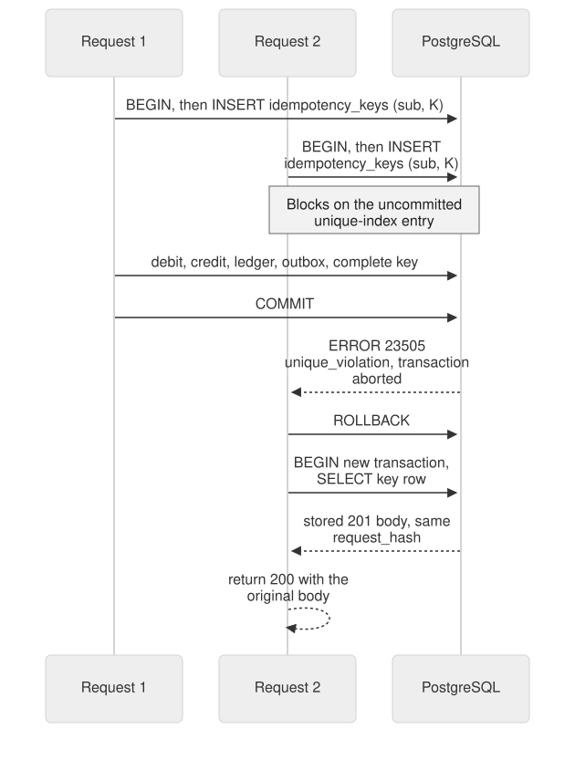
23505 → replay: same hash = stored response (201 body replayed as 200, or the stored 422); different hash = 409 IDEMPOTENCY_KEY_REUSED .executeNew once (replayMissRetried ), then 409 CONCURRENT_UPDATE .sourceAccountId, destinationAccountId , amountMinor, currency, description (field order does not change it).(jwt.sub, header) .O(log n) per request; space ≈ keys in 24 hours (ILLUSTRATIVE: 10,000 × 60 × 24 ≈ 14.4M rows at 10K/min).SET NX lock; a separately committed "IN_PROGRESS" row; client-side dedup only. All leave a window where the key is reserved but the money state is unknown.| Mechanism | Solves | Does not solve |
|---|---|---|
| Idempotency key | Retries and concurrent replays of the same (subject, key) |
Two different keys competing for one balance |
| Optimistic locking | Lost updates and overspending between different payments | A client that retries without a key |
O(1) comparison.deadlock_timeout 1 s, then abort), which would add a 1-second stall to p99.40P01 stays retryable.UPDATE outbox_events o SET status = 'PUBLISHING', claimed_by = :instanceId, lease_until = now() + interval '30 seconds', publish_tries = o.publish_tries + 1 WHERE o.id IN ( SELECT e.id FROM outbox_events e WHERE e.status = 'PENDING' OR (e.status = 'PUBLISHING' AND e.lease_until < now()) ORDER BY e.created_at LIMIT 50 FOR UPDATE SKIP LOCKED ) RETURNING o.id, o.payload;PENDING or whose PUBLISHING lease expired; FOR UPDATE SKIP LOCKED makes concurrent publishers skip rows another publisher is claiming.PUBLISHING, lease_until = now() + 30 s ). No Kafka I/O happens inside a database transaction.acks=all, key sourceAccountId).UPDATE ... SET status = 'PUBLISHED', published_at = now() WHERE id = :id AND status = 'PUBLISHING' .
| Crash point | Result |
|---|---|
| After transfer commit, before any claim | Row stays PENDING; next poll claims it |
| After claim commit, before Kafka send | Lease expires; another publisher reclaims |
After Kafka ack, before PUBLISHED |
Lease expires; event is produced again (duplicate) |
| Publisher holds a live lease | Others skip the row |
delivery.timeout.ms (20 s) < lease (30 s): a healthy publisher finishes or gives up before anyone else may reclaim, so two publishers only send the same event concurrently in the crash case.O(batch × log n) via the partial index; publish O(batch) sends. Capacity ≈ 50 rows / 200 ms = 250 claims/s per pod, above the 167/s target.@TransactionalEventListener(AFTER_COMMIT) (still loses events on a crash); Kafka transactions (do not cover the PostgreSQL write).processed_events(event_id) and audit_log → commit → commit the Kafka offset. A duplicate key means "already done": acknowledge.payment.events.DLT via DeadLetterPublishingRecoverer .processed_events keeps 14 days against a 7-day topic.O(log n) per event.SET with TTL.DEL the meta and balance keys of both accounts (registered as an afterCommit callback). Failure to delete is logged; the response is still 201.O(1) Redis operations.current + previous × (1 − elapsed fraction of the current minute) .INCR current, EXPIRE 120, GET previous, computes the estimate, returns allow or deny atomically.200 + 500 × 40/60 ≈ 533 < 600, so allowed.O(1) time, 2 keys per active user.O(log n) and memory per request), token bucket.OFFSET pagination scans and discards every skipped row and drifts when new rows arrive.(created_at, id) ; the next page is WHERE (created_at, id) < cursor ORDER BY created_at DESC, id DESC LIMIT limit + 1 . Fetching one extra row reveals whether nextCursor exists. id breaks ties for rows created in the same microsecond.O(log n + limit) per page at any depth.O(1) per transfer (two extra inserts); the ledger grows O(payments).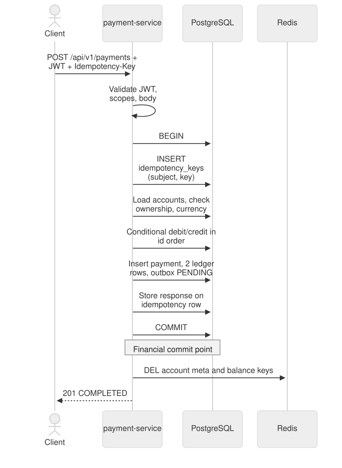
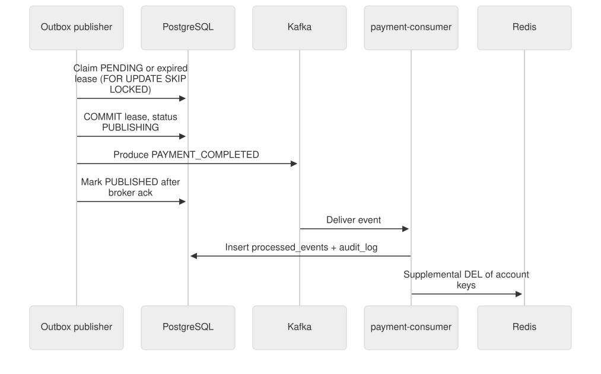
Step by step:
POST /api/v1/payments with JWT and Idempotency-Key.PaymentService computes the request hash and opens a transaction (BEGIN).INSERT into idempotency_keys (the mutex); SAVEPOINT.ACTIVE, and currency.PENDING); store the response on the key row.COMMIT: the financial commit point.DEL of both accounts' keys; return 201 COMPLETED.PUBLISHING), commits, produces to Kafka, then marks PUBLISHED.payment-consumer receives the event, inserts processed_events and audit_log in one transaction, commits the offset, and deletes the cache keys again (supplemental).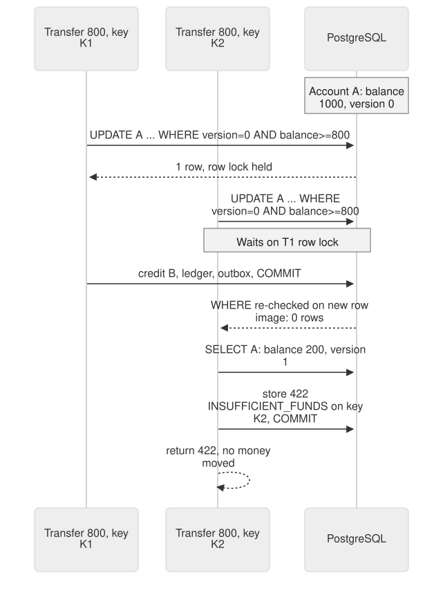
The second transfer gets 422 and its key row stores that outcome, so its own retries replay the 422.
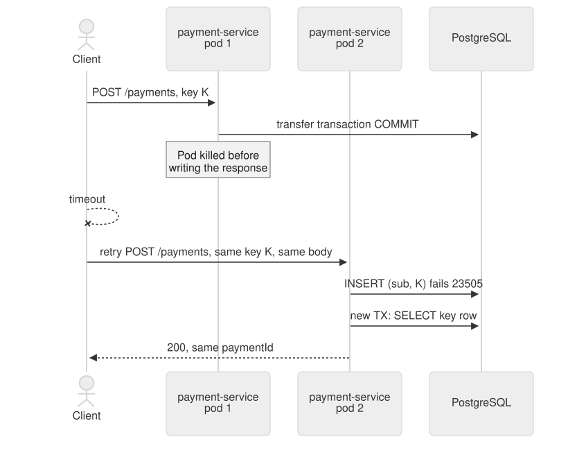
The outbox row was committed with the money, so the event is still published by whichever pod's publisher claims it next.
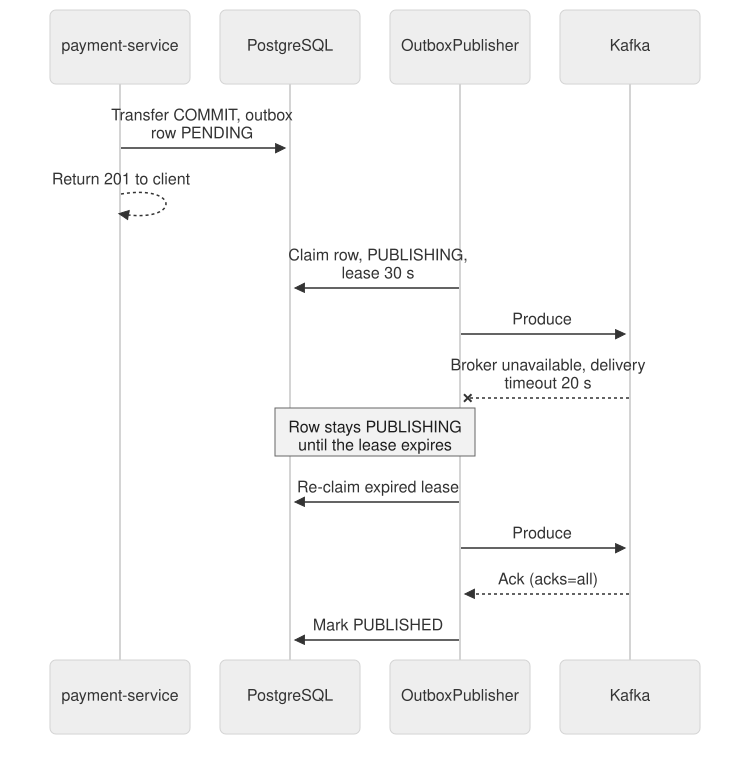
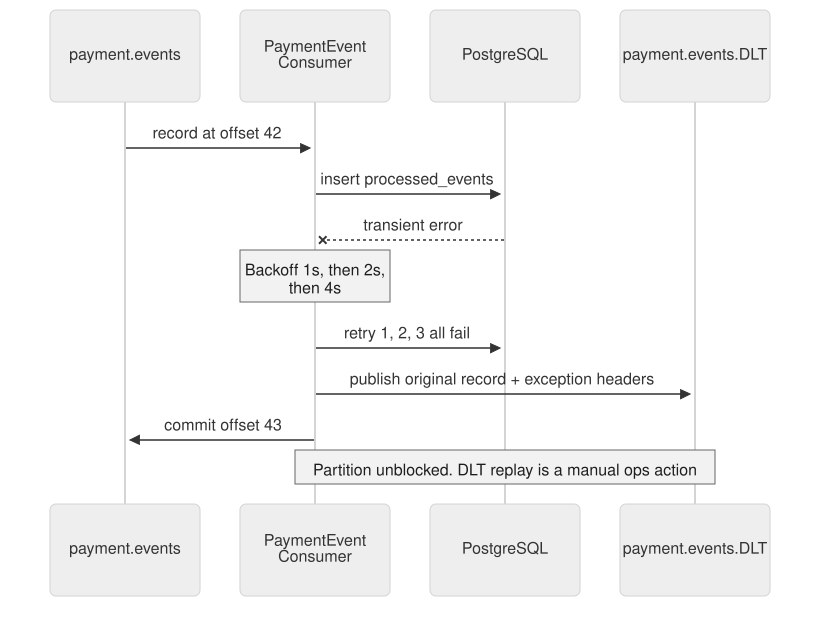
40P01 (deadlock), or a 0-row update whose reload shows funds are still sufficient but the version changed.409 CONCURRENT_UPDATE with retriable: true. Because the key was never committed, a client retry with the same key is a new attempt, not a replay.FROZEN.ROLLBACK TO SAVEPOINT undoes the debit (no account row stays changed).422 ACCOUNT_NOT_ACTIVE ) is written on the key row, and the transaction commits.422 and never attempt another debit.payment-service pod run transfers at once; up to 40 hold a database connection at a time across two pods.OutboxPublisher instances (one per pod) poll the same table.| Race | Scenario | Prevention |
|---|---|---|
| Overspend | Two different payments debit one account | Conditional UPDATE with balance + version predicate; row lock; re-check after wait |
| Duplicate execution | Two copies of the same request | Unique-index blocking on (subject, key) |
| Deadlock | A→B and B→A | Ascending-id update order, 40P01 retry |
| Double claim of outbox rows | Two publishers poll at once | FOR UPDATE SKIP LOCKED + committed lease |
| Duplicate audit | Event delivered twice | PK processed_, unique audit_log.payment_id |
| Stale cache fill | GET reads old value, transfer commits, GET writes old value | Bounded by the 5 s TTL (not prevented) |
| Property | Meaning here |
|---|---|
| Atomicity | Accounts, payment, ledger, key completion, and outbox row commit together or not at all |
| Consistency | Row-level constraints plus the transfer transaction keep balances non-negative and the ledger balanced |
| Isolation | READ COMMITTED plus the conditional update; the update takes a row lock until commit |
| Durability | After COMMIT, the money movement survives a JVM crash |
Background: write skew happens when two transactions read overlapping data and then write different rows based on what they read; neither sees the other's write. Here every invariant that matters (balance ≥ 0) is checked in the same statement that writes the row, and conflicting transfers write the same row, so the row lock plus re-check prevents the anomaly without SERIALIZABLE. A future rule like "daily limit across all of a user's accounts", computed by summing rows, would be vulnerable and would need to be materialized as a row and updated conditionally.
| Hop | Guarantee |
|---|---|
| Money in PostgreSQL | Exactly once per (subject, key) within 24 hours |
| Outbox → Kafka | At least once (duplicates on ack-then-crash and lease reclaim) |
| Kafka → consumer | At least once (offset committed after the database commit) |
| Audit side effect | Effectively once (dedup on event_id and payment_id) |
An idempotent Kafka producer removes duplicates only within one producer session; it does not remove resends by a different publisher pod. Consumer idempotency is therefore mandatory.
sourceAccountId, so events for one source account land on one partition.| Property | Guaranteed? | Mechanism / reason |
|---|---|---|
| No negative balance | Yes | Conditional update + CHECK ( |
| No partial transfer | Yes | One transaction; savepoint for terminal failures |
At most one financial effect per (subject, key) in 24 h |
Yes | Composite primary key insert is the mutex |
| Balanced ledger per payment | Yes, by transaction + tests | Not expressible as a row-level CHECK |
| Event eventually published for every committed payment | Yes, while PostgreSQL is intact | Outbox row committed with the money; leases reclaim stuck rows |
| Event published exactly once | No | At-least-once |
| Audit side effect exactly once | Effectively | Dedup |
| Global ordering of events | No | Only per partition, and weakened by multiple publishers |
| Fresh GET balance | No | Up to 5 s stale |
| Duplicate protection without a key | No | A new key per retry creates a new payment |
| Leader election / consensus | Not needed | Row locks, unique indexes, and leases in the same database |
| Failure scenario | Why it happens | System behaviour | Recovery mechanism | Remaining risk |
|---|---|---|---|---|
| Client retries after a timeout | Network loss, slow response | Same key: unique insert fails, fresh-transaction replay of the stored body | Idempotency key | Client generating a new key per retry creates a new payment |
| Two transfers compete for a balance | Concurrent users or retries with different keys | Conditional update; loser classified 422 or retried |
Row lock + predicate re-check | Hot accounts see retries and 409s |
| Crash before commit | Pod killed, JVM crash | PostgreSQL rolls back everything, including the key insert | Client retry; a waiting duplicate may win | None for money |
| Crash after commit, before response | Pod killed at the worst moment | Client sees a timeout | Retry → 200 replay; outbox row published by any pod |
None |
| PostgreSQL unavailable | DB outage, network | 503 DATABASE_; readiness fails; pods leave the Service |
Automatic when DB returns; client retries with same key | Thundering-herd spike on recovery |
| Lock contention / slow DB | Hot rows, slow queries | lock_timeout 1 s (55P03) → bounded retry → 409 |
Client retry with same key | Tail latency |
| Deadlock | Lock cycles beyond account rows | 40P01 → rollback → retry (max 3) |
Automatic | Rare 409 |
| Kafka unavailable | Broker outage | Transfers continue; outbox rows accumulate | Leases expire; rows reclaimed after Kafka returns | Audit delayed; disk growth if very long |
| Duplicate events | Ack-then-crash, lease reclaim, redelivery | PK conflict treated as success | Dedup | None for audit |
| Consumer crash | Pod failure | Rebalance; lag rises | Redelivery from last committed offset | None (dedup) |
| Poison message | Bug, unexpected JSON | Retries exhausted or non-retryable → DLT; partition continues | Fix bug, replay DLT manually | Audit row missing until replay |
| Redis unavailable | Redis outage | 50 ms timeout; cache, rate limit, and DEL skipped |
Automatic; stale keys expire by TTL | GET may be stale ≤ 5 s after Redis returns |
| Outbox publisher frozen | Long GC pause, frozen pod | Rows stuck PUBLISHING |
Another replica reclaims after the 30 s lease | Duplicate publication |
| Pod restart mid-request | Rolling deploy, node drain | Graceful shutdown drains requests | Commit is the only success signal; client retries | None for money |
A. Crash after commit (the "lost response" case)
23505; a fresh transaction reads the stored row; the hash matches; the API returns 200 with the original paymentId.B. Kafka outage
PENDING outbox row.PUBLISHING.outbox_pending returns to ~0, consumer lag recovers, and audit_log count matches payments for the outage window.ILLUSTRATIVE: a one-hour outage at 10K/min accumulates ~600K rows; two pods draining at ~250/s each, while new events keep arriving at ~167/s, clear the backlog in roughly 20 minutes.
C. Consumer bug sends records to the DLT
payment.events (manual tool, headers preserved).D. PostgreSQL outage
503; readiness turns red so the Service stops routing to the pod.hikaricp_connections_pending and p95 for a thundering herd; rate limits and client backoff spread the load.
server.shutdown=graceful with a 20 s shutdown phase; Kubernetes terminationGracePeriodSeconds: 30 exceeds it, and a preStop hook sleeps 5 s so endpoints update first.The system guarantees money correctness under every failure above: no negative balance, no partial transfer, at most one financial effect per key. It does not guarantee exactly-once event publication, strict event ordering, or fresh cached reads. See Section 11.7 for the full table.
POST /payments (ILLUSTRATIVE budget)POST /payments (ILLUSTRATIVE budget)| Step | Typical cost | Grows under load because |
|---|---|---|
| TLS, HTTP parse, JWT verify (cached JWKS) | 1–3 ms | CPU saturation |
| Redis rate-limit Lua script | 0.3–1 ms | Redis latency; skipped if Redis is down |
| Wait for a Hikari connection | 0 ms when idle | Pool exhaustion: the dominant tail term in the baseline |
| ~10 SQL round trips in one transaction | 5–15 ms | Row-lock waits on hot accounts, plan regressions, WAL fsync |
COMMIT (WAL flush) |
1–5 ms | Disk fsync latency, checkpoint I/O |
Post-commit Redis DEL |
0.3–1 ms | Bounded by the 50 ms timeout |
| Response serialization | < 1 ms | — |
Uncontended, this sums to roughly 10–25 ms. A < 200 ms p95 target therefore leaves most of the budget for queueing (for connections and row locks), and that is what the optimizations attack.
POST /payments per second (10K+/min). BENCHMARK TARGET.O1. Indexes on the write path
idx_outbox_claimable , every publisher poll (5×/s per pod) scans the whole outbox, including 7 days of PUBLISHED rows; cleanup and history queries also scan.pg_stat_statements (total_exec_time, calls, shared_blks_read ), EXPLAIN (ANALYZE, BUFFERS) , pg_stat_user_tables.seq_scan deltas.O2. HikariCP sizing
maximum-pool-size: 20 , minimum-idle = max (fixed pool, no connection churn), connection-timeout: 2s , max-lifetime below any idle cut-off.2 pods × 20 + 2 consumers × 10 + admin < max_connections (100) .hikaricp_connections_pending , hikaricp_connections_acquire_seconds p95, pg_stat_activity .O3. Short, fixed-shape transactions
O4. Redis cache-aside for GET
O5. Kafka batching and consumer parallelism
linger.ms=5, compression.type=lz4 ; 12 partitions × 12 consumer threads.| Idea | Why rejected |
|---|---|
| Batch multiple transfers in one transaction | Couples unrelated payments' fate; complicates idempotency |
| Read replica for balance checks | Replica lag makes balance decisions unsafe |
synchronous_ |
Trades durability of acknowledged payments for latency |
Pessimistic SELECT FOR UPDATE |
Longer lock hold for no correctness gain |
LISTEN/NOTIFY would help).Status: everything in this section is an intended plan. No test has been executed and no benchmark result exists. Never present any number here as measured.
| Layer | What | Tools | Acceptance |
|---|---|---|---|
| Unit | Hashing, validation, error mapping, 0-row classification | JUnit 5 | Deterministic, no Spring context |
| API integration | Create account (balance 0), transfer, get status, ownership 403 |
MockMvc, Testcontainers PostgreSQL | Status codes and JSON contracts |
| Database integration | Constraints, unique keys, update row counts | Testcontainers | CHECK (23514) and unique (23505) violations behave as designed |
| Concurrency | Competing debits; same key; A→B vs B→A | ExecutorService + CountDownLatch + Testcontainers |
Invariants hold, checked in SQL |
| Kafka | Retry then success; DLT after budget; duplicate delivery | Embedded/Testcontainers Kafka | One audit row per payment |
| Failure injection | Kill DB backend mid-transaction; pause Kafka; stop a publisher | Testcontainers | No partial rows; outbox drains; leases reclaimed |
| Security | No token, expired token, wrong audience, missing scope, other user's account | Spring Security test | 401 / 403 |
| Load / stress / soak | Targets, knee, leaks | k6 | Targets evaluated, not assumed |
Competing debits (the core claim). Account A = 1,000; release N threads at once (latch start gate), each transferring 800 with a distinct key. Expected: exactly one 201, the rest 422, A ≥ 0, exactly 2 ledger rows. Repeat ~200 times; assert invariants from the database, not just from HTTP responses.
Same key. 10 threads, same subject, key, and body. Expected: one 201, nine 200 with the same paymentId, exactly one payment row.
A→B vs B→A. 100 alternating transfers. Expected: all complete or return retriable 409; A + B constant; no unhandled 40P01.
Crash before commit. Terminate the backend (pg_) after the debit statement. Expected: no payment, ledger, or key row; balances unchanged.
Kafka down. Pause the broker, run 100 transfers, unpause. Expected: all 201; outbox drains to PUBLISHED; 100 audit rows.
Lease reclaim. Publisher 1 claims 50 rows and is stopped. Expected: publisher 2 publishes all 50 after the 30 s lease.
Acceptance criteria: no negative balance; repeated or concurrent use of one key never creates a second debit/credit pair; every completed payment has two equal ledger rows; failed transfers write nothing; a 0-row debit with balance < amount is INSUFFICIENT_, not CONCURRENT_; pending outbox rows publish after Kafka recovers; duplicates never duplicate audit rows; scopes never grant access to another user's account.
ramping-arrival-rate at ≥ 167 POST /payments/s for 10 minutes after a 2-minute ramp (discarded), plus ~500 GET/s of background traffic (example). POST and GET reported separately. At least 200 test users; balances seeded by SQL; many accounts so contention is realistic; 429s counted as errors.maximum-pool-size: 5 .| Metric | Source | Notes |
|---|---|---|
POST /payments p50 / p95 / p99 |
k6 | p95 < 200 ms is a target |
| POST rate and successful transfers / min | k6 | Target ≥ 10,000 / min |
| GET rate and GET p95 | k6 | Extra traffic, not part of the 10K claim |
| Error rate | k6 | 4xx and 5xx separated |
| Kafka produce / consume rate | JMX / Micrometer | ≥ 10K events/min plus rare duplicates |
| PostgreSQL CPU | Container metrics | Average over the steady window |
| Cache hit rate | Micrometer | Explains GET offload, not POST p95 |
| Outbox lag | count( |
Near zero in steady state |
Expected vs actual: no actual results exist. The results table in the project is intentionally blank, and hardware, node sizes, shared_buffers, and environment must be recorded next to any future numbers.
Both Deployments also read the ConfigMap payment-config and the Secret payment-secrets (omitted from the drawing for readability). PostgreSQL, Kafka, Redis, and Keycloak are provided dependencies, not part of the cluster manifests.
Both Deployments read the same ConfigMap and Secret (only one edge of each is drawn). PostgreSQL, Kafka, and Redis are provided dependencies; the project ships no operators for them.
Local development uses Docker Compose with PostgreSQL 16, Kafka (KRaft mode, no ZooKeeper), Redis 7.4, and Keycloak. The application image:
# docker/payment-service.DockerfileFROM eclipse-temurin:21-jreWORKDIR /appCOPY payment-service/target/payment-service.jar app.jarENV JAVA_OPTS="-XX:+UseG1GC -XX:MaxRAMPercentage=75"EXPOSE 8080ENTRYPOINT ["sh", "-c", "java $JAVA_OPTS -jar app.jar"]The consumer image follows the same pattern on port 8081 (Actuator only).
Two Deployments, two Services, one ConfigMap, one Secret.
apiVersion: apps/v1kind: Deploymentmetadata: name: payment-servicespec: replicas: 2 selector: matchLabels: app: payment-service template: metadata: labels: app: payment-service spec: terminationGracePeriodSeconds: 30 containers: - name: payment-service image: payment-service:local ports: - containerPort: 8080 envFrom: - configMapRef: { name: payment-config } - secretRef: { name: payment-secrets } readinessProbe: httpGet: { path: /actuator/health/readiness, port: 8080 } periodSeconds: 5 livenessProbe: httpGet: { path: /actuator/health/liveness, port: 8080 } periodSeconds: 15 lifecycle: preStop: exec: command: ["sh", "-c", "sleep 5"] resources: requests: { cpu: "250m", memory: "512Mi" } limits: { cpu: "1", memory: "1Gi" }Configuration (ConfigMap and Secret):
apiVersion: v1kind: ConfigMapmetadata: name: payment-configdata: SPRING_DATASOURCE_URL: jdbc:postgresql://postgres:5432/payments SPRING_DATASOURCE_HIKARI_MAXIMUM_POOL_SIZE: "20" SPRING_DATASOURCE_HIKARI_CONNECTION_TIMEOUT: "2000" SPRING_KAFKA_BOOTSTRAP_SERVERS: kafka:9092 SPRING_DATA_REDIS_HOST: redis SPRING_SECURITY_OAUTH2_RESOURCESERVER_JWT_ISSUER_URI: http://keycloak:8082/realms/payments OUTBOX_POLL_INTERVAL_MS: "200" OUTBOX_BATCH_SIZE: "50" OUTBOX_LEASE_SECONDS: "30"---apiVersion: v1kind: Secretmetadata: name: payment-secretstype: OpaquestringData: SPRING_DATASOURCE_PASSWORD: "<set at deploy time>" SPRING_DATA_REDIS_PASSWORD: "<set at deploy time>"Secrets (database and Redis passwords) come from Kubernetes Secrets or Compose environment files and are never committed to git.
| Setting | Value | Reason |
|---|---|---|
| Readiness | /, includes the DB indicator |
A pod that cannot reach PostgreSQL should not get traffic |
| Liveness | /, no dependencies |
A DB outage must not restart-loop every pod |
| Startup | Optional startupProbe (~60 s) |
JVM warm-up and Flyway migration must not trip liveness |
| CPU | Request 250m / limit 1 | Watch CFS throttling, which shows up as p99 spikes |
| Memory | 512 Mi / 1 Gi, MaxRAMPercentage=75 |
Heap sized from the container limit |
| HPA | Optional: CPU 70%, min 2, max 4 for payment-service |
Max bounded by the DB connection budget |
| Consumer scaling | Manual; replicas × concurrency ≤ 12 |
Extra threads sit idle |
| PodDisruptionBudget | minAvailable: 1 per Deployment |
Node drains cannot remove all pods |
Kafka is not a readiness dependency for payment-service (the outbox absorbs broker loss); consumer readiness requires Kafka; Redis is not required for readiness.
docker compose -f docker/docker-compose.yml up -d postgres kafka redis keycloak .mvn -q -DskipTests package .k6 run load-tests/payments.js .Typical local ports: API 8080, consumer Actuator 8081, PostgreSQL 5432, Kafka 9092, Redis 6379, Keycloak 8082.
/actuator/health , /health/liveness , /health/readiness , /actuator/prometheus , /actuator/metrics .correlationId (from X-Correlation-Id or generated), paymentId, idempotencyKey. The JWT is never logged.| Metric | Type | Question it answers |
|---|---|---|
http_ |
Histogram | POST p50 / p95 / p99 |
http_ |
Counter | 5xx rate |
payment_ |
Timer | Time inside the transfer transaction |
payment_ |
Counter | completed, replayed, insufficient_funds, concurrent_update, … |
payment_ |
Counter | Contention signal |
hikaricp_, hikaricp_ |
Gauge / Timer | Pool saturation |
outbox_pending, outbox_ |
Gauge | Publication lag |
kafka_ |
Gauge | Consumer lag |
payment_ |
Counter | Poison messages |
cache_ |
Counter | Redis hit ratio |
jvm_gc_pause_seconds |
Timer | GC contribution to the tail |
container_ |
Counter | DB CPU |
Representative PromQL:
# POST /payments p95 over 5 minutes, all pods mergedhistogram_quantile(0.95, sum by (le) (rate(http_server_requests_seconds_bucket{uri="/api/v1/payments",method="POST"}[5m]))) # Successful transfers per minutesum(rate(payment_transfer_outcome_total{outcome=~"completed|replayed"}[1m])) * 60 # Redis hit ratiosum(rate(cache_gets_total{result="hit"}[5m])) / sum(rate(cache_gets_total[5m]))Histogram buckets should include 50, 100, 150, 200, 300, 500 ms so that 200 ms is a bucket edge and the p95 estimate is accurate around the target.
| Alert | Condition | Why |
|---|---|---|
| PaymentP95High | POST p95 > 200 ms for 10 min | SLO breach |
| Payment5xxRate | 5xx > 1% for 5 min | Dependency or bug |
| HikariSaturated | hikaricp_ for 5 min |
Pool is the bottleneck |
| OutboxStuck | outbox_ |
Kafka or publisher problem |
| ConsumerLagHigh | Lag > 10,000 for 10 min | Consumers falling behind |
| DLTNonEmpty | increase( |
Manual action needed |
This is a reasoning procedure built from the documented signals (the project does not prescribe a runbook beyond the alerts).
| Symptom | First check | Likely cause | Action |
|---|---|---|---|
| POST p95 high | hikaricp_, acquire time |
Pool saturation | Check slow queries in pg_stat_statements; check pool size vs budget |
| POST p95 high, pool fine | payment_, pg_locks waits |
Hot account contention | Identify the account; consider pessimistic locking for it |
Many 409 CONCURRENT_ |
Retry counter by account | Hot row | Same as above |
OutboxStuck |
Kafka broker health; publisher logs | Kafka down or publisher frozen | Payments are fine; watch the backlog drain after recovery |
| Audit rows missing | payment_, consumer lag |
Poison messages or consumer down | Fix, replay DLT (dedup makes it safe) |
| Stale balances reported | cache_gets_total, Redis health |
Fill race or failed DEL |
Bounded by 5 s TTL; explain cached: true |
503 spike |
DB health, readiness | PostgreSQL outage | Recover DB; clients retry with the same key |
Trace a single payment end to end by searching logs for its correlationId and paymentId, then the matching eventId (equal to outbox_) in the consumer logs.
This is a speaking script for explaining the whole project continuously in about 30 minutes. Each segment has what to say (written to be spoken aloud), the technical details you need to understand behind the words, the diagram to draw, the points you must not forget, the interruption an interviewer is most likely to make, and a transition into the next segment.
Honesty rule for the whole talk: every throughput, latency, and percentage figure in this project (10K+ POST /payments per minute, < 200 ms p95, ~40% p95 reduction, ~30% database CPU reduction) is a benchmark target, not a measured result. Say so the first time you mention a number.
| Time | Segment |
|---|---|
| 0–2 min | 1. Problem statement and motivation |
| 2–5 min | 2. Requirements, scope, and technology stack |
| 5–10 min | 3. High-level design and architecture |
| 10–15 min | 4. Low-level design and component implementation |
| 15–19 min | 5. Core algorithms and data structures |
| 19–23 min | 6. APIs, database, concurrency, and consistency |
| 23–26 min | 7. Failure handling and recovery |
| 26–28 min | 8. Performance engineering and benchmarking |
| 28–30 min | 9. Trade-offs, limitations, and future improvements |
What to say:
"This project is a payment backend for internal account-to-account transfers. Think of a wallet app where user A sends money to user B, both of whom hold accounts inside the same system, in the same currency. It is not a card processor and it does not talk to external banks.
The interesting part is not moving a number from one row to another. It is doing that correctly when many things go wrong at once. I designed it around four problems.
First, two transfers racing for the same balance. If an account has 1,000 and two requests each try to send 800 at the same moment, both can read 'balance is 1,000, that's enough' before either writes. Without protection the account ends at minus 600.
Second, client retries. A mobile client sends a payment and times out. It cannot tell whether the payment never ran or ran and only the response was lost. If it retries blindly, the user pays twice.
Third, events without coupling to Kafka. After a payment, other systems like audit need to know. If I publish to Kafka after the database commit and the process crashes in between, the event is lost forever. If I make Kafka part of the commit, a broker outage blocks payments that the database could have done perfectly well.
Fourth, fast reads without unsafe money decisions. Balance reads should be fast, which suggests a cache, but a cache is stale by definition, so it must never be used to approve a debit.
The rest of the design is the answer to those four problems."
Technical details to understand:
BIGINT columns; overdrafts are prohibited.Diagram to draw: nothing yet, or two boxes "Account A: 1,000" with two arrows "debit 800" racing toward it, to make the race concrete.
Key points to remember:
Likely interruption: "Is this a real banking system?" No. It is a two-service Spring Boot reference design, sized for one engineer, documented with an intended implementation and verification plan. Regulatory, PCI, and AML claims are explicitly out of scope.
Transition: "So given those four problems, let me say exactly what the system has to do and what I chose to build it with."
What to say:
"Functionally, a user can create an account they own, which always starts with a zero balance, so the public API can never mint money. They can read the balance of accounts they own, transfer from an account they own to any other active account, and read a payment if they're on either side of it. Every successful transfer writes a double-entry ledger, publishes a payment event after the commit without ever losing it, and the event consumer retries failures and parks poison messages in a dead-letter topic.
Non-functionally, the hard requirements are correctness ones: no negative balances, no partial transfers, a balanced ledger, at most one financial effect per idempotency key, and money must stay correct if Redis or Kafka is down. The performance requirements are benchmark targets: 10,000 or more POST /payments per minute, which is about 167 per second, at under 200 milliseconds p95 on that endpoint. I want to be clear that these are targets the design is sized for; nothing in the document is a recorded measurement.
The stack is Java 21 and Spring Boot 3.4 for the two services, PostgreSQL 16 as the source of truth, Kafka for asynchronous events, Redis for read caching and rate limiting, HikariCP as the connection pool, Spring Security as an OAuth2 resource server that validates JWTs issued by Keycloak, and Docker plus Kubernetes for deployment, with k6 for load tests and Testcontainers for integration tests.
Just as important is what I deliberately left out: card networks, external banks, FX, overdrafts, holds, two-phase commit, multi-region, and building my own authorization server. Leaving those out let me go deep on correctness."
Technical details to understand:
Diagram to draw: a small table on the whiteboard: "In scope / Out of scope", or skip and go straight to the architecture.
Key points to remember:
owner_id = jwt.sub and balance 0.payments.read, payments.write) are capabilities; ownership is checked per row.Likely interruption: "Is 167 per second a lot?" Not for PostgreSQL. The interesting part is holding it with a full ACID transfer, an idempotency key, a ledger, and an outbox row in every transaction, at a tight p95.
Transition: "With that scope, here is the shape of the system."
What to say:
"There are two Spring Boot services and three data systems. I'll draw them.
The client calls payment-service over HTTPS with a bearer JWT and an Idempotency-Key header. payment-service owns everything synchronous and financial: the REST API, JWT validation, ownership checks, the transfer transaction, writing outbox rows, and also running the outbox publisher in the background.
PostgreSQL holds accounts, payments, ledger entries, idempotency keys, and the outbox table. It is the only place money lives.
Kafka has one topic, payment.events, with 12 partitions, plus a dead-letter topic payment.. The outbox publisher inside payment-service relays committed events into Kafka.
payment- is the second service. It is a Kafka consumer group that writes an audit row for each completed payment, and as a supplement it deletes cached Redis keys again.
Redis caches account metadata and balances for GET requests and stores rate-limit counters. It is never on the debit path.
The key property is that data flows one way. Money only moves on the write path: one PostgreSQL transaction. The event path reads committed facts and never changes balances. The read path uses the cache and never feeds back into writes. That is why a Kafka or Redis outage cannot corrupt a balance.
One decision I want to call out: accounts are not a separate microservice. A transfer debits, credits, and writes the ledger. If accounts lived in another service with its own database, every transfer would need a distributed transaction or a saga. Keeping them in one ACID boundary is the central design decision. The cost is that both services share one PostgreSQL database, which is a known microservices anti-pattern. I accept it because the consumer only writes audit and dedup tables and never touches balances, and I have a migration path: the consumer could move to its own database because it only talks to the payment side through Kafka."
Technical details to understand:
COMMIT of the transfer transaction. A 201 response means the money moved. There is no PENDING financial state.payment-service pods and 2 payment-consumer pods (listener concurrency 6 each, so 12 threads for 12 partitions).Diagram to draw: Client → payment-service (API, domain, outbox publisher) → PostgreSQL; payment-service → Redis; outbox publisher → Kafka payment.events → payment- → PostgreSQL (audit) and Redis (supplemental delete), and → DLT. Then label three paths: write (solid), event (async), read (cache-aside).
Key points to remember:
payment-service to avoid 2PC; shared database accepted and defended.Likely interruption: "Isn't a shared database a microservices anti-pattern?" Yes, and I say so first. The consumer is not a second owner of balances; it writes only audit_log and processed_, which reference payments logically without foreign keys, so the split is ready. The risks are resource contention, schema coupling, and shared blast radius.
Transition: "Let me zoom into payment-service and show how a transfer is actually implemented."
What to say:
"Inside payment-service, requests pass through the Spring Security filter chain, which validates the JWT, then a rate-limit filter, then a thin controller. Controllers never open transactions. The only class that defines the money transaction boundary is PaymentService.
Payment is a facade. It first validates the request shape, things like amount must be positive and source must differ from destination, without touching the database. Then it computes a SHA-256 hash of the canonical request body. Then it runs executeNew inside a transaction.
One subtle implementation point: Spring's @Transactional works through a proxy. If the facade called this., the call would bypass the proxy and no transaction would start, so each statement would auto-commit and a debit could commit without its credit. So the facade runs executeNew through a Transaction, which also gives me savepoints.
Inside executeNew, in order: insert the idempotency key row; create a savepoint; load both accounts by primary key and check that the caller owns the source, both are active, and currencies match; update the two accounts in ascending id order with conditional updates; insert the payment row, two ledger rows, and one outbox row; write the HTTP status and response body onto the idempotency row; commit. After commit, a registered callback deletes the two accounts' Redis keys, best effort, and the API returns 201.
All account changes use explicit modifying queries like debit, not Hibernate dirty checking, because rolling back to a savepoint does not undo Hibernate's in-memory entity state.
The other background components are the OutboxPublisher, which runs every 200 milliseconds on each pod, and two cleanup jobs: idempotency keys older than 24 hours and published outbox rows older than 7 days.
On threading: Tomcat has up to 200 request threads, but the real concurrency limit for writes is the HikariCP pool, 20 connections per pod, so at most 40 transfer transactions are in flight across two pods. Extra requests wait for a connection for up to 2 seconds and then get 503."
Technical details to understand:
PaymentService.transfer ), Template method (TransactionTemplate ), Repository, Transactional outbox, Idempotent receiver, Cache-aside, Chain of responsibility (filter chain), DTO.KafkaConsumer is not thread-safe; Spring gives each listener thread its own consumer, so listener threads must not exceed partitions.Diagram to draw: the component box diagram inside the pod: filter chain → RateLimitFilter → controllers → PaymentService → Idempotency and repositories → PostgreSQL; Account → Redis; OutboxPublisher → Kafka.
Key points to remember:
TransactionTemplate avoids the @Transactional self-invocation trap.Likely interruption: "Why not just put @Transactional on transfer?" Because the facade must catch a unique-violation error and then start a new transaction to read the winner's row. After a unique violation PostgreSQL marks the current transaction aborted, so the retry and replay logic has to sit outside the transaction.
Transition: "That ordering of steps hides the two algorithms that make the system correct, so let me explain them properly."
What to say:
"The first algorithm is the conditional update, my optimistic-locking compare-and-set. Every account has a version column. The debit is one SQL statement:
UPDATE accounts SET balance =.
If it updates one row, the debit happened. If it updates zero rows, I reload the account and classify why: missing account is 404; inactive is a 422; if the balance is now below the amount, that's 422 INSUFFICIENT_ and I don't retry; only if funds are still sufficient but the version changed do I treat it as a conflict and retry the whole transaction, at most three attempts with 10 to 50 milliseconds of jittered backoff.
Walk through the race: balance 1,000, two 800 debits with different keys. T1's update matches and takes a row lock. T2's update on the same row waits for that lock. When T1 commits, PostgreSQL re-evaluates T2's WHERE clause against the new row, sees balance 200 and version 1, and matches zero rows. T2 reloads, sees 200 is less than 800, and returns 422. Checking funds before version matters: otherwise T2 would retry pointlessly and finally return a misleading 409.
I want to be precise: this is not lock-free. The update takes a row lock until commit. 'Optimistic' means I never hold a lock between reading and writing.
To avoid deadlocks when A pays B while B pays A, every transaction updates the two accounts in ascending id order, which breaks the circular-wait condition. Deadlocks are still possible through other locks, so I still retry PostgreSQL's deadlock error 40P01.
The second algorithm is the unique-insert idempotency mutex. The first statement of the transaction inserts (, which is the primary key. If two identical requests arrive at once, the second insert blocks on the first one's uncommitted index entry. If the first commits, the second gets unique-violation 23505, rolls back, opens a fresh transaction, reads the stored response and returns it as a 200 replay, or 409 if the request hash differs. If the first rolls back, the second's insert succeeds and it becomes the only one allowed to debit. The lock and the money commit or vanish together, so there is no window where a key is reserved but the outcome is unknown.
Other techniques: a double-entry ledger, two equal rows per payment; keyset pagination for payment history, which is O( per page; and a sliding-window rate limiter in Redis using two minute counters in a Lua script."
Technical details to understand:
READ COMMITTED, a blocked UPDATE re-checks its predicate on the newest row version (PostgreSQL's EvalPlanQual). That is why the predicate approach is correct without SERIALIZABLE.O(log n) each, multiplied by at most 3 attempts.current + previous × (1 − elapsed fraction of the current minute) .sourceAccountId, destinationAccountId , amountMinor, currency, description.Diagram to draw: a two-column timeline T1 / T2 for the 1,000 / 800 / 800 race, and a second timeline for two same-key requests showing "blocks → 23505 → new transaction → replay".
Key points to remember:
Likely interruption: "Why not SELECT .?" It would hold a lock from read through application logic to commit, with no correctness gain over the predicate. I'd switch to it only for a small set of very hot accounts, where serializing beats a retry storm.
Transition: "Those algorithms lean heavily on the schema and on the API contract, so let me show those, and then talk about consistency."
What to say:
"The API is REST under /api/v1, bearer JWT on every endpoint. POST /accounts creates an account for the caller with zero balance. GET / and /balance read owned accounts, possibly from cache, with a cached flag in the response. POST /payments requires an Idempotency-Key of 16 to 128 characters. It returns 201 on first execution, 200 on a replay with the original body, 409 IDEMPOTENCY_ for the same key with a different body, 422 for insufficient funds or inactive accounts, 409 CONCURRENT_ with retriable: true when contention retries run out, 429 when rate limited, and 503 if the database is unavailable. GET / requires being a party to the payment, and payment history uses an opaque keyset cursor.
The schema: accounts with a version column and CHECK (; payments; ledger_entries with a unique index on payment and entry type, so at most one debit and one credit per payment; idempotency_ with primary key subject plus key, storing the request hash and the response body as JSONB; outbox_events with status PENDING, PUBLISHING, or PUBLISHED plus lease columns; and on the consumer side processed_ and audit_log.
One honest point: a row-level CHECK can only see one row, so 'debit equals credit' is not a database constraint. It is guaranteed because the application writes both rows with the same amount variable in one transaction, and verified by integration tests and a reconciliation query.
I also denormalized deliberately: the balance column is derivable from the ledger, but storing it makes the debit check O(1) inside the conditional update.
Indexes: partial indexes on unpublished outbox rows and on completed idempotency keys keep polling and cleanup proportional to the small backlog, not the whole table; composite history indexes serve keyset pagination.
For consistency guarantees: no negative balance, no partial transfer, at most one financial effect per subject and key within 24 hours, and every committed payment's event is eventually published. What I do not guarantee: exactly-once event publication, global ordering, or fresh cached balances, which can be up to five seconds stale."
Technical details to understand:
404, and 403 roll back the whole transaction including the key insert.200 rather than 201 because nothing new was created; the important property is the identical body and paymentId.Diagram to draw: the ER diagram: ACCOUNTS → PAYMENTS (source, destination); PAYMENTS → LEDGER_ENTRIES (exactly two); PAYMENTS ↔ IDEMPOTENCY_KEYS; PAYMENTS → OUTBOX_EVENTS → PROCESSED_EVENTS; PAYMENTS → AUDIT_LOG.
Key points to remember:
Likely interruption: "Is READ COMMITTED enough? What about write skew?" Write skew needs two transactions that write different rows based on overlapping reads. Here every invariant is checked in the statement that writes the row, and conflicting transfers write the same row. If I later added a rule like a per-customer daily limit computed by summing rows, I'd materialize it as a row updated conditionally, because that rule would be vulnerable to write skew.
Transition: "So far I've described the happy path. Most of the design effort went into what happens when things fail."
What to say:
"Let me walk failure points in order.
Crash before commit: PostgreSQL rolls everything back, including the idempotency insert, so nothing happened and a waiting duplicate may become the winner.
Crash after commit but before the response: the client times out and retries with the same key; the insert fails with a unique violation; the replay returns 200 with the same paymentId. The outbox row was committed with the money, so any pod's publisher will still publish the event.
Kafka down: transfers keep succeeding because Kafka isn't in the commit. That is the whole point of the transactional outbox. The transfer transaction inserts an outbox row with status PENDING. Every 200 milliseconds a publisher claims up to 50 rows with an UPDATE . that sets status PUBLISHING with a 30-second lease, commits that claim, sends to Kafka with acks=all, and only after the broker acknowledges marks them PUBLISHED. If a publisher dies, its lease expires and another pod reclaims the rows. The producer's delivery timeout is 20 seconds, deliberately shorter than the 30-second lease.
There is one window I cannot close: Kafka acknowledges, then the publisher crashes before marking the row published. The row is reclaimed and sent again. So publication is at-least-once, and the consumer must be idempotent. It inserts the event id into processed_ and the audit row in one transaction, treats a duplicate key as success, and commits the Kafka offset only after the database commit. Dedup rows live 14 days, longer than the 7-day topic retention, so a replayed event is still recognized.
Consumer failures: one attempt plus three retries with 1, 2, and 4 second backoff, then the record goes to the dead-letter topic with exception headers and the partition moves on. Replay from the DLT is a manual operation and is safe because of dedup.
Redis down: commands time out after 50 milliseconds and the system fails open. Reads go to PostgreSQL, rate limiting is skipped, deletes are skipped, and payments continue.
Health checks are split: readiness includes the database so a pod that can't reach PostgreSQL stops getting traffic; liveness has no dependencies so a database outage doesn't restart every pod."
Technical details to understand:
@TransactionalEventListener(AFTER_COMMIT) ? It still loses the event if the process dies before the send.Diagram to draw: the outbox state machine PENDING → PUBLISHING (, with an arrow "lease expired → reclaim", and a crash-point table next to it.
Key points to remember:
Likely interruption: "Then why not exactly-once with Kafka?" Because exactly-once needs one atomic boundary, and here there are two systems. The honest guarantee is to make the receiver idempotent and claim effectively-once side effects.
Transition: "Correctness is the first priority; the second is meeting the latency target, so here is how I'd engineer and prove the performance."
What to say:
"An uncontended transfer is roughly 10 to 25 milliseconds of real work: about ten indexed statements plus the commit's WAL flush. That's an illustrative budget, not a measurement. So a 200 millisecond p95 budget is mostly about queueing: waiting for a pooled connection or a row lock.
The levers therefore target queueing. First, HikariCP sizing. By Little's law, busy connections equal arrival rate times hold time: 167 per second times 15 to 40 milliseconds is only about 2.5 to 7 connections on average, but bursts plus GET traffic push utilization up, and queueing delay explodes near full utilization. The baseline uses a pool of 5 per pod; the optimized configuration uses 20, within the connection budget of PostgreSQL's 100 connections. Second, partial indexes so the outbox poll and cleanup jobs stop scanning ever-growing tables. Third, short transactions with no network I/O inside. Fourth, Redis cache-aside for GETs, which mainly reduces database CPU, not POST latency.
The resume figures, about 40% lower p95 and about 30% lower database CPU, are targets for an A/B benchmark: same code, baseline versus optimized, same open-loop arrival rate of 167 POST per second plus background GETs, a 2-minute warm-up discarded, 10 minutes steady, three runs each, and an ablation adding one lever at a time. I'd use k6's arrival-rate executor to avoid coordinated omission, and merge histograms rather than average percentiles across pods."
Technical details to understand:
reduction = (baseline − optimized) / baseline ; ILLUSTRATIVE: 300 ms → 180 ms = 40%.synchronous_commit = off , pessimistic locking.Diagram to draw: a latency bar: JWT 1–3 ms | rate limit < 1 ms | pool wait (variable) | SQL 5–15 ms | commit 1–5 ms | Redis delete < 1 ms, with "queueing" highlighted.
Key points to remember:
Likely interruption: "Isn't a pool of 5 a strawman baseline?" It is under-provisioned and I disclose it; that is why I'd also compare against the default and show absolute p95 values next to the percentage.
Transition: "Let me finish with what I'd change and what I deliberately accepted."
What to say:
"The main trade-offs: a single PostgreSQL primary is the write-scaling ceiling, which I accept for ACID transfers. Optimistic locking is great when load is spread, but a very hot account serializes on one row and produces retries and 409s; the mitigation there is pessimistic locking or sub-account bucketing for those accounts. The polling outbox adds about 200 milliseconds of event delay and some database load; at higher scale I'd move to change-data-capture with Debezium. Event order per account isn't strictly preserved because several publishers can send one account's events out of order. Cached balances can be up to five seconds stale, including through a cache-fill race that post-commit deletes cannot close. Idempotency keys expire after 24 hours. The services share a database. And there is no mTLS and no JWT revocation check before expiry.
Future improvements, none of which are implemented: time-partitioned tables for idempotency keys and the outbox, a read replica for history only, never for balances, CDC for the outbox, OpenTelemetry tracing, and sharding accounts with a saga for cross-shard transfers if the load ever demanded it.
To summarize the whole system in one sentence: one ACID transaction is the single source of truth for money, and everything after it, events, audit, cache invalidation, is asynchronous, idempotent, and retryable."
Technical details to understand:
Diagram to draw: none; point back at the architecture and the three paths.
Key points to remember:
Likely interruption: "If you could change one decision, what would it be?" At higher scale, polling outbox to CDC, to cut relay latency and polling load. At this scale, polling is simpler and easier to debug.
Closing: "That's the end-to-end picture. I'm happy to go deeper on any part: the concurrency algorithm, the outbox, or how I'd run the benchmark."
How to practise: read each "What to say" block aloud with a timer. Then close the booklet and redraw the segment's diagram from memory while speaking. Aim to finish within 30–32 minutes; if you overrun, shorten Segments 4 and 8 first, never Segments 5 and 7.
These are the project's 45 existing questions and answers (15 easy, 15 medium, 15 hard), reproduced in full. Cross-references such as "Hard Q8" point to questions in this section. Section numbers mentioned inside answers refer to the original project document; the same material is covered in this booklet (database in Section 8, algorithms in Section 9, failures in Section 12).
Ground rules for answering: every throughput, latency, and percentage figure is a BENCHMARK TARGET / UNVERIFIED. Configuration values (pool sizes, TTLs, timeouts, partition counts) are the design's starting points.
Answer:
payment-service and payment-consumer , plus PostgreSQL, Kafka, and Redis, all running on Kubernetes.Answer:
| System | Role | What it is not |
|---|---|---|
| PostgreSQL | Source of truth: balances, payments, ledger, idempotency keys, outbox | Not optional. If it is down, no money moves (503) |
| Kafka | At-least-once delivery of already-committed payment facts to the audit consumer | Not part of the commit. It never creates or rolls back money |
| Redis | Cache for GET account and balance, plus a best-effort rate limiter | Never read by a debit. Fails open |
Answer:
payment-service owns everything synchronous and financial: the API, JWT checks, the transfer transaction, outbox writes, and the outbox publisher.payment-consumer owns asynchronous audit work. It can scale, lag, or crash on its own without touching the payment p95.Answer:
POST /payments and times out. It cannot tell "never executed" from "executed, but the response was lost." Retrying blindly could pay twice.Idempotency-Key header (16–128 characters, UUIDv4 recommended) and sends the same key on every retry of that payment.idempotency_keys with primary key (subject, idempotency_key) , where subject is the JWT sub.200, so no second debit happens.BIGINT minor units?Answer:
amount_minor = 80000 means $800.00. Integer arithmetic is exact and fast.0.1 + 0.2 != 0.3 in binary floating point, and rounding errors add up across millions of postings.NUMERIC alternative: also exact, but slower, and it invites fractional-cent values the business does not allow.CHECK (balance_minor >= 0) and CHECK (amount_minor > 0) constraints work naturally on integers.currency is stored on every row. Multi-currency support would need per-currency scaling rules.balance_minor column?Answer:
ledger_entries: a DEBIT on the source and a CREDIT on the destination, with the same amount and currency and the same payment_id.balance = opening + credits − debits .O(1) inside one conditional UPDATE. Summing the ledger on every transfer would be slow and racy.CHECK only sees one row. UNIQUE (payment_id, entry_type) stops two DEBITs but does not compare amounts. Equality is guaranteed by the application and checked by tests and a reconciliation query.version column work here?Answer:
version BIGINT. The debit is a single SQL statement:UPDATE accounts SET balance_minor = balance_minor - :amt, version = version + 1 WHERE id = :id AND version = :v AND status = 'ACTIVE' AND balance_minor >= :amt;UPDATE still takes a row lock until commit. "Optimistic" only means no lock is held between the read and the write.SELECT ... FOR UPDATE locks.Answer:
payment-service is an OAuth2 resource server. It only validates JWTs issued by an external IdP (Keycloak in dev). It checks the signature against JWKS, exp/nbf, iss, and aud.payments.read and payments.write.jwt.sub must own the account.
owner_id = sub, opening balance always 0, so the API cannot mint money.403 FORBIDDEN. Wrong ownership returns 403 ACCOUNT_ACCESS_DENIED .payments.write debit any account. That is the classic broken-object-level-authorization (BOLA/IDOR) bug.Answer:
PAYMENT_COMPLETED event goes to topic payment.events. Consumer group payment-audit-consumers reads it, writes an audit_log row, and does a supplemental Redis eviction.Answer:
outbox_events with status PENDING. Either the payment and its event intent both commit, or neither does.OutboxPublisher (runs every 200 ms in each API pod) reads pending rows, sends them to Kafka, and marks them PUBLISHED after the broker acks.Answer:
| Key | TTL | Purpose |
|---|---|---|
account:meta:{id} |
60 s | Owner, currency, status for GET account |
account:balance:{id} |
5 s | GET balance only |
ratelimit: |
120 s | Sliding-window rate limit |
SET with the TTL. After a transfer commits, DEL both accounts' keys.UPDATE in PostgreSQL.cached: true/false so clients know a balance might be up to about 5 s stale.POST /payments return, and what does each mean?Answer:
| Code | Meaning | Client should |
|---|---|---|
201 |
First successful execution for this (sub, key) |
Done |
200 |
Replay: same key and same body; original response returned | Done (same paymentId) |
400 |
Validation (amount ≤ 0, same account, missing key) | Fix the request |
401 / 403 |
Bad token, missing scope, or you don't own the source | Fix auth |
404 |
Unknown account | Fix the IDs |
409 IDEMPOTENCY_ |
Same key, different body | Client bug; use a new key |
409 CONCURRENT_ |
Contention retries exhausted (retriable: true) |
Retry with the same key |
422 |
Insufficient funds, frozen/closed account, currency mismatch | Don't retry blindly |
429 / 503 |
Rate limited, or DB unavailable (Retry-After) |
Back off and retry with the same key |
422 for insufficient funds: the request is valid (so not 400), and retrying won't fix it (so not 409).Answer:
DefaultErrorHandler makes 1 attempt plus 3 retries, with exponential backoff of 1 s, 2 s, then 4 s, and only for transient exceptions.payment.events.DLT through the DeadLetterPublishingRecoverer , along with exception headers.payment.events. This is safe because the consumer deduplicates on eventId.201 but the consumer hasn't run yet?Answer:
COMMIT of the transfer transaction. Kafka and Redis are both outside that path.201, the payment, both ledger rows, both balance updates, and the outbox row are durable. GET /payments/{id} shows COMPLETED.PENDING financial state. The only possible status value is COMPLETED (CHECK (status IN ('COMPLETED')) ).201: Kafka publication, the audit row, and possibly a stale cached balance for up to 5 s.200 replay with the same paymentId, and the outbox row is still published by any pod.Answer:
POST /payments per minute (about 167/s), each a full ACID transfer. GETs are extra and not counted.Likely follow-up: "Then why put it on your resume?" Say it describes the design target and how it is validated, and never present it as a production metric.
Answer:
Payment (the facade) validates the request shape (bad requests are 400s with no DB work), then computes a SHA-256 request hash. It then runs executeNew in one READ COMMITTED transaction:
BEGIN 1. INSERT idempotency_keys(subject, key, hash) -- the mutex; blocks a concurrent same-key insert 2. SAVEPOINT sp_after_key 3. SELECT source, destination by PK; check caller owns source (else 403 → full rollback) check ACTIVE + same currency 4. Sort the two ids; run debitIfSufficient / creditIfActive in ascending-id order 5. INSERT payments (COMPLETED), 2 ledger rows, 1 outbox row (PENDING) 6. UPDATE idempotency row: http_status=201, response_body, completed_atCOMMIT 7. afterCommit: best-effort Redis DEL for both accounts → return 201O(log n) with a small constant.23505 on the key insert: replay in a new transaction (Medium Q3).UPDATE returns 0 rows. How do you decide what happened?Answer:
Zero rows can mean several things, so the code re-SELECTs the account and classifies the result in a fixed order:
404 (shouldn't happen because of the FK).status != 'ACTIVE' → 422 ACCOUNT_NOT_ACTIVE (terminal).balance_minor < amount → 422 INSUFFICIENT_FUNDS (terminal, even if the version also changed).version != expected → version conflict, roll back and retry.version = 1 and balance = 200. Calling that a version conflict would waste three retries and then return a misleading 409. Checking funds first returns the correct 422 right away.version = 0 AND balance >= 800 against the new row, matches 0 rows, reloads, sees 200 < 800, and returns 422.(balance=200, version=1) with expected version 0 and amount 800 must return INSUFFICIENT_FUNDS , never RETRY.Answer:
INSERT (subject, key) . The composite primary key's unique index allows only one in-flight inserter.INSERT blocks on the winner's uncommitted index entry. It has not touched any account.23505 unique_violation , and its transaction is aborted.SELECTs the key row.201 becomes a 200 replay, or the stored 422).409 IDEMPOTENCY_KEY_REUSED .INSERT then succeeds, and the loser becomes the only session allowed to debit.executeNew once (replayMissRetried ), and after that returns 409 CONCURRENT_UPDATE .(subject, key) are impossible.Likely follow-up: "Why not a Redis SETNX lock?" A Redis lock is not atomic with the DB commit. If it is lost or expires, or the DB transaction fails, you end up with a double execution or a stuck key. The unique insert commits or rolls back together with the money.
TransactionTemplate instead of @Transactional, and why must the replay run in a new transaction?Answer:
@Transactional works through a Spring AOP proxy. If transfer() calls this.executeNew() , the call skips the proxy and no transaction starts. Each statement auto-commits, which would silently break atomicity: a debit could commit without its credit.executeNew and replay through TransactionTemplate.execute(...) inside the facade. It also exposes createSavepoint() and rollbackToSavepoint() , which the terminal-failure path needs.23505, PostgreSQL puts the transaction in an aborted state. Every further statement fails with 25P02 in_failed_sql_transaction until rollback. A fresh transaction is clean and sees the winner's committed row.@Modifying queries (debitIfSufficient ) instead of dirty-checked entities.Answer:
FROZEN. You must undo the debit, but keep the key row with a stored 422, so retries replay the error instead of trying again.ROLLBACK TO SAVEPOINT sp_after_key undoes only the account updates. The code then writes the error onto the key row and COMMITs. The stored error and the "no money moved" state commit together.| Failure | Key row committed? | Why |
|---|---|---|
| Insufficient funds, inactive account, currency mismatch | Yes, with the 422 body |
Deterministic business outcome; a replay must return the same answer |
| Version conflict, deadlock, lock timeout | No, full rollback | Transient; the client's same-key retry should be a new attempt |
404 unknown account, 403 not owner |
No, full rollback | The request was never authorized, so don't record anything for it |
400 validation |
Never reaches the DB | Rejected before any DB work |
Answer:
deadlock_timeout (default 1 s) and aborts one victim with 40P01.40P01 deadlock, 40001 serialization failure (rare under READ COMMITTED), and 55P03 lock timeout (lock_timeout is 1 s per transfer).409 CONCURRENT_UPDATE with retriable: true. The key was never committed, so the client's same-key retry is a fresh attempt.SKIP LOCKED, and why a lease?Answer:
UPDATE outbox_events o SET status='PUBLISHING', claimed_by=:me, lease_until = now() + interval '30 seconds', publish_tries = publish_tries + 1 WHERE o.id IN (SELECT id FROM outbox_events WHERE status='PENDING' OR (status='PUBLISHING' AND lease_until < now()) ORDER BY created_at LIMIT 50 FOR UPDATE SKIP LOCKED)RETURNING o.id, o.payload;FOR UPDATE SKIP LOCKED: several API pods poll at the same time. Without it, they would queue behind each other's row locks. With it, each one skips rows another publisher is currently claiming and takes the next ones.PUBLISHING with lease_until. Other publishers ignore the row until the lease expires.acks=all, key sourceAccountId). Only after the broker acks, UPDATE ... SET status='PUBLISHED' WHERE id=:id AND status='PUBLISHING' .Answer:
PUBLISHED, so the event is sent again.processed_events(event_id) (PK) and audit_log (unique payment_id and event_id). A duplicate-key error means "already done": treat it as success so the offset can advance.eventId equals outbox_events.id , so publication and dedup share one identity even when two publishers send the same row.processed_events keeps 14 days, longer than the topic's 7-day retention. If dedup state expired before the topic did, a replayed old event would look new.Answer:
sourceAccountId, destinationAccountId , amountMinor, currency, and description. Canonical means field order and whitespace don't change the hash (there is a unit test for that).request_hash CHAR(64) .(sub, key) and same hash: replay the stored response.(sub, key) and a different hash: 409 IDEMPOTENCY_KEY_REUSED , with no financial effect.description is part of the hash, so a retry that only changes the memo text also gets 409. That strictness is intentional.Answer:
executeNew registers a TransactionSynchronization with afterCommit(() -> cache.evict(src, dst)) . The DEL runs only after PostgreSQL commits and deletes both the meta and balance keys for both accounts.DEL fails: log a warning and still return 201. The 5-second TTL is the backstop.DEL is supplemental. It is asynchronous and can lag, so it cannot provide immediate consistency.Answer:
| Index | Type | Serves |
|---|---|---|
PK ( |
Composite unique | Idempotency insert, mutex, and replay lookup on every POST |
idx_ |
Partial | Publisher poll (5×/s per pod) |
idx_ |
Partial | 7-day outbox cleanup |
idx_ |
Partial | 24-hour key cleanup |
( and the same on destination |
Composite | Keyset payment history |
uq_ |
Unique | At most one DEBIT and one CREDIT per payment |
( on the ledger |
Composite | Statements and reconciliation |
PUBLISHED rows. A partial index contains only matching rows, so it stays tiny and cache-resident, and it can answer ORDER BY created_at LIMIT 50 directly. Rows drop out of the index once they are PUBLISHED.OFFSET?Answer:
(created_at, id) from the last row on the previous page.WHERE source_account_id = :acct AND (created_at, id) < (:ts, :id)ORDER BY created_at DESC, id DESC LIMIT :limit + 1direction=ALL, there are two branches (source and destination), each an index range scan limited to limit + 1 rows, combined with UNION ALL and re-sorted. Fetching one extra row tells you whether nextCursor exists.id is the tie-breaker for two payments with the same timestamp.O(log n + limit) per page, at any depth.OFFSET: page 1000 scans and discards 20,000 rows. New inserts between requests also shift rows, causing duplicates or gaps.400 on a bad cursor).Answer:
maximum-pool-size: 20 per pod, fixed size (minimum-idle = max , so no connection churn during bursts), and connection-timeout: 2s , after which the API returns 503.2 API pods × 20 + 2 consumers × 10 + admin < max_connections (100) . This also caps HPA replicas.sourceAccountId the partition key?Answer:
payment.events and 2 consumer pods × concurrency: 6 = 12 listener threads, one per partition. That is about 14 events/s per partition (ILLUSTRATIVE), with headroom so one pod restart doesn't collapse the topic onto a few threads.KafkaConsumer is not thread-safe, so Spring gives each thread its own consumer.sourceAccountId: all events for one source account land on one partition, which keeps them in order.acks=all, idempotent producer, linger.ms=5, lz4 compression.Answer:
jwt.sub, a default of 600 requests/min, implemented as two fixed one-minute counters in Redis.count ≈ current + previous × (1 − elapsed_fraction_of_current_minute) .200 + 500 × (40/60) ≈ 533 , which is under 600, so the request is allowed.INCR current, EXPIRE 120, GET previous, computes the estimate, and returns allow or deny in one round trip, with no race between check and increment.O(1) time and 2 keys per active subject.O(log n) per request and memory per request.READ COMMITTED really enough? When would this design produce an anomaly?Answer:
UPDATE waits for the row lock, then PostgreSQL follows the update chain to the newest row version and re-evaluates the WHERE clause (EvalPlanQual). The invariant balance ≥ amount is checked in the same statement that writes the row, and conflicting transfers write the same row. So there is no lost update and no overspend.SELECT SUM(...) FROM payments . Two concurrent transfers from different accounts of the same customer would each read 4,000, each pass, and each insert separate rows. That is write skew, and READ COMMITTED won't stop it.daily_limits) and update it with the same conditional-UPDATE pattern. This reuses the existing technique and is my preference.SELECT ... FOR UPDATE on a per-customer row.SERIALIZABLE for that path, which brings SSI overhead and 40001 retries.Answer:
| Crash point | State afterwards | How it heals |
|---|---|---|
Before COMMIT |
PostgreSQL rolls back everything, including the key insert | A blocked same-key request may become the winner; the client retries |
After COMMIT, before HTTP response |
Money moved, key row has the stored 201, outbox PENDING |
Client retries with the same key and gets 200 replay; any pod publishes the event |
After commit, before Redis DEL |
Stale GET possible | 5 s TTL |
| Publisher: after claim commit, before Kafka send | Row stuck PUBLISHING |
Lease expires after 30 s; another pod reclaims |
Publisher: after Kafka ack, before PUBLISHED |
Event in Kafka, row still PUBLISHING |
Reclaimed and sent again, so a duplicate (unavoidable) |
| Consumer: after DB commit, before offset commit | Audit row written | Redelivery hits the PK conflict and is treated as success |
| Consumer: mid-processing | Nothing committed | Rebalance and redelivery |
Answer:
PUBLISHED mark.eventId plus a unique audit_log.payment_id .Answer:
delivery.timeout.ms = 20 s < lease of 30 s. A healthy publisher either finishes or gives up on its send before anyone else may reclaim the row.markPublished checks status = 'PUBLISHING' but not claimed_by. A stale P1 can mark a row PUBLISHED that P2 has re-claimed.PUBLISHED after some successful ack.WHERE claimed_by = :me AND publish_tries = :token ), or move to CDC or a single publisher per key range.sourceAccountId for ordering. Is ordering actually guaranteed per account?Answer:
created_at order).Answer:
1 / lock-hold-time . If the lock is held for about 10 ms from the UPDATE to COMMIT, that account caps at roughly 100 debits/s. 30% of 167/s is about 50/s, which is already at 50% utilization of one row, so queueing delay climbs quickly.lock_timeout (1 s) errors, rising payment_transfer_retries_total , more 409 CONCURRENT_UPDATE , and a hot Kafka partition.UPDATEs, so the row lock covers them too. Reordering so the account updates are the last statements before COMMIT, and keeping the commit fast (WAL fsync), shortens the time each debit holds the lock.422 when funds are spread across buckets.Answer:
DELs the key, which is already absent.SETs the old balance.DEL cannot prevent this, and neither can Kafka eviction, because the consumer runs later and can lag.| Technique | How | Cost |
|---|---|---|
| Versioned SET | Cache {balance,; a Lua script only writes if the incoming version > the cached one |
Every reader carries the version; a little more code |
| Delayed double delete | DEL again about 500 ms after commit |
Narrows the window, doesn't close it |
| Lease/token (Facebook memcache style) | On a miss, get a token; a DEL invalidates the token so the late SET is rejected |
More Redis round trips |
| No balance cache | Always read PostgreSQL | Costs DB CPU, which the cache was there to save |
cached: true), the TTL is an acceptable engineering trade-off.Answer:
max_connections, which raises POST p95.audit_log and processed_events , which reference payments logically, without FKs, so the split is ready to happen. The real anti-pattern to avoid is two services both writing balances.payment-service stays the single writer of accounts, payments, ledger, and outbox, with no dual writes.Answer:
lock_timeout (1 s), the per-subject rate limit, and the short winner transaction.DELETE creates bloat and vacuum work. Better: time-partition the table and drop old partitions.PaymentResponse within the window must stay backward compatible or version the stored body.sub, their keys stop matching. That is unlikely, but it is an assumption.Answer:
COMMIT (so the client gets 201) before the replica has the WAL. If it fails over at that moment, the transaction is gone on the new primary.201 for a payment that no longer exists, so the API broke its durability promise.synchronous_commit = off is explicitly rejected.synchronous_standby_names with synchronous_commit = on or remote_apply). This gives RPO = 0 for acked commits, at the cost of a replica round trip added to every commit's latency.audit_log against payments and ledger sums. Mismatches after a failover window get flagged.Answer:
lock_timeout; use SET LOCAL).idempotency_keys , outbox_events, and payments; drop partitions instead of DELETE.SERIALIZABLE, SELECT ... FOR UPDATE , a Redis distributed lock, and the conditional UPDATE. When would you switch?Answer:
| Approach | Correct? | Cost | When it wins |
|---|---|---|---|
Conditional UPDATE (chosen) |
Yes, the predicate is re-checked after the lock wait | Retries/409 on hot rows; the app must classify 0 rows |
Many accounts, low contention |
SELECT . then UPDATE |
Yes | Lock held from the read through app logic to commit, which is longer | Hot accounts: serializing is better than retry storms |
SERIALIZABLE (SSI) |
Yes, and also catches write skew | Predicate-lock tracking on all transactions; 40001 aborts needing retries |
Many cross-row invariants that are hard to attach to one row |
| Redis lock (Redlock/SETNX) | No, not atomic with the DB commit; the lease can expire mid-transaction | An extra dependency on the money path | Never for money in this design |
payment_transfer_retries_total and 409 rates show sustained contention on a small set of accounts, use FOR UPDATE for those accounts only. The doc lists this as a future step.SERIALIZABLE for that path.FOR UPDATE everywhere. It means longer locks with no correctness gain over the predicate.Answer:
DLTNonEmpty pages someone, and audit rows are missing until a manual replay (safe because of dedup).Answer:
ramping-arrival-rate . A closed-loop generator slows down when the server does, which hides queueing.hikaricp_connections_pending and acquire time should fall along with p95.histogram_quantile(0.95, sum by (le)(rate(...))) .Answer:
exp. Mitigations: short lifetimes, and token introspection for high-value transfers.connection-timeout , and statement_timeout . That is acceptable for availability, but worth stating.POST /payments returns 404 for an unknown destination, which reveals whether an account exists. UUIDv4 IDs make guessing impractical, but a stricter design returns the same error for both cases.lock_timeout and the rate limit.sub (no probing other users' stored responses), no client-supplied ownerId, the API cannot mint balances, no JWT in logs, and secrets in Kubernetes Secret objects.Interviewers rarely stop at the first answer. For each question, be ready for this follow-up. Most follow-ups are answered by another question in this bank, noted in brackets.
| Question | Likely follow-up | Where answered |
|---|---|---|
| Easy Q1 | "Why internal transfers only?" | Section 3.5 (scope) |
| Easy Q2 | "What happens if Redis is down?" | Medium Q10, Section 12 |
| Easy Q3 | "Isn't sharing one database an anti-pattern?" | Hard Q8 |
| Easy Q4 | "What if two identical requests arrive at once?" | Medium Q3 |
| Easy Q5 | "What about currencies with 0 or 3 decimals?" | Easy Q5 caveat |
| Easy Q6 | "Can a CHECK constraint enforce debit = credit?" | Easy Q6, Section 8.5 |
| Easy Q7 | "If the update locks the row, why call it optimistic?" | Easy Q7, Hard Q12 |
| Easy Q8 | "Can a token with both scopes read any account?" | Easy Q8 |
| Easy Q9 | "Does Kafka give exactly-once payments?" | Hard Q3 |
| Easy Q10 | "What if Kafka acks and the publisher crashes?" | Hard Q2, Hard Q4 |
| Easy Q11 | "Can the cached balance be wrong?" | Hard Q7 |
| Easy Q12 | "Why 422 and not 409 for insufficient funds?" | Easy Q12 |
| Easy Q13 | "What happens if the database is down for the consumer?" | Hard Q13 |
| Easy Q14 | "Is there a PENDING state?" | Easy Q14 |
| Easy Q15 | "Is 167 per second a lot?" | Section 21 |
| Medium Q1 | "Why no Kafka call inside the transaction?" | Medium Q1, Section 13.3 (O3) |
| Medium Q2 | "Why check funds before version?" | Medium Q2 |
| Medium Q3 | "Why not a Redis SETNX lock?" | Medium Q3 follow-up |
| Medium Q4 | "What exactly goes wrong with self-invocation?" | Medium Q4 |
| Medium Q5 | "Why is a 404 rolled back but a 422 stored?" | Medium Q5 table |
| Medium Q6 | "Can sorted locking still deadlock?" | Medium Q6 |
| Medium Q7 | "Why commit the claim before calling Kafka?" | Medium Q7 |
| Medium Q8 | "Why 14 days of dedup for a 7-day topic?" | Medium Q8 |
| Medium Q9 | "What if only the description differs on retry?" | Medium Q9 |
| Medium Q10 | "Why not delete the cache before commit?" | Medium Q10 |
| Medium Q11 | "What is the cost of an extra index?" | Medium Q11 |
| Medium Q12 | "How do you handle two payments with the same timestamp?" | Medium Q12 (id tie-breaker) |
| Medium Q13 | "Why not just add more pods?" | Medium Q13, Section 13.4 |
| Medium Q14 | "Is per-account order really guaranteed?" | Hard Q5 |
| Medium Q15 | "What happens when Redis is down?" | Medium Q15 |
| Hard Q1 | "Give an example of write skew in a future feature." | Hard Q1 |
| Hard Q2 | "Which crash window cannot be closed?" | Hard Q2 |
| Hard Q3 | "Would Debezium give exactly-once?" | Hard Q3 |
| Hard Q4 | "How would you add fencing?" | Hard Q4 |
| Hard Q5 | "How would an order-dependent consumer cope?" | Hard Q5 |
| Hard Q6 | "What is the throughput ceiling of one hot row?" | Hard Q6 |
| Hard Q7 | "Is closing the fill race worth the complexity?" | Hard Q7 |
| Hard Q8 | "How would you migrate the consumer to its own database?" | Hard Q8 |
| Hard Q9 | "How do you stop the idempotency table growing?" | Hard Q9 |
| Hard Q10 | "What replication mode gives RPO = 0?" | Hard Q10 |
| Hard Q11 | "What changes for cross-shard transfers?" | Hard Q11 |
| Hard Q12 | "When would you switch to SELECT FOR UPDATE?" | Hard Q12 |
| Hard Q13 | "What should go to the DLT and what should not?" | Hard Q13 |
| Hard Q14 | "Which lever gave how much of the 40%?" | Hard Q14, Section 21 |
| Hard Q15 | "What would you harden first?" | Hard Q15 |
| Decision | Chosen | Alternative | Why chosen | Disadvantage | When the alternative wins |
|---|---|---|---|---|---|
| Framework | Java 21 + Spring Boot | From-scratch Netty | Mature transactions, security, Kafka, metrics | JVM footprint; proxy pitfalls | Extreme per-request efficiency needs |
| Source of truth | PostgreSQL | Redis as ledger | ACID, constraints, row locks | Single-primary write ceiling | Never for money in this design |
| Async events | Kafka | Audit inline in the request | Decoupled, survives consumer downtime | Eventual audit; broker to run | Tiny systems where inline is simpler |
| Cache | Redis, optional, fail-open | Balances in Redis for debits | Fast GETs without risking money | GET up to 5 s stale | Never for debit authorization |
| Duplicate protection | Idempotency keys and optimistic locking | Only one of them | They solve different races | Two mechanisms to build and test | — |
| Idempotency lock | Unique insert inside the money transaction | Redis SETNX; committed "reserve" row |
No in-flight window | Blocked duplicate holds a connection | — |
| Service split | Two services, one shared PostgreSQL | Separate account service + DB | Avoids 2PC for money | Shared-DB anti-pattern | When the consumer needs independent scaling of storage |
| Deployment | Kubernetes Deployments | Compose only; service mesh | Rolling updates, probes, independent replicas | YAML and probe tuning | Compose for local only |
| Isolation | READ COMMITTED + conditional update | SERIALIZABLE | Predicate re-check is exactly the needed protection | App must classify 0-row results | Many cross-row invariants |
| Outbox relay | Polling publisher with leases | Debezium CDC; AFTER_COMMIT listener |
No extra infrastructure; AFTER_COMMIT loses events |
~200 ms delay; polling load | Higher scale (CDC) |
| Partition key | sourceAccountId |
paymentId or no key |
Per-account events on one partition | Hot account → hot partition | No ordering needed |
| Consumer retries | In-process DefaultErrorHandler, then DLT |
Non-blocking retry topics | One topic + DLT, simple | Partition blocked up to ~7 s | Slow, frequent transient failures |
Optimistic locking (conditional update) instead of SELECT ..
409s; the update still holds a row lock until commit.Transactional outbox instead of publishing after commit.
Sharing one database between two services.
audit_log and processed_events ; financial rows stay in payment-service; no financial dual write; sized for one engineer.payment-service remains the only writer of accounts, payments, ledger, and outbox.READ COMMITTED instead of SERIALIZABLE.
PUBLISHED outbox rows older than 7 days are deleted and cannot be republished from PostgreSQL.processed_events rows older than 14 days are deleted (topic retention is 7 days).CONCURRENT_UPDATE on hot accounts; the update still holds a row lock.| Category | Limitation | Possible improvement (not implemented) |
|---|---|---|
| Functional | No refunds, reversals, holds, scheduled payments, or multi-currency | Reversal as a new payment with opposite postings referencing the original |
| Scalability | One primary bounds write throughput; hot accounts serialize on one row | Shard accounts by id range; sub-account bucketing |
| Scalability | idempotency_keys grows ~14M rows/day at 10K/min (ILLUSTRATIVE) |
Time-partitioned table, drop partitions instead of DELETE |
| Reliability | Single region; DB failover loses in-flight transactions | Synchronous standby; multi-AZ managed PostgreSQL |
| Reliability | Per-account event order not strictly preserved across publishers | Single publisher per key range, or CDC |
| Security | No mTLS; Redis and Kafka rely on network policy and passwords | mTLS, NetworkPolicies, Kafka SASL/SCRAM |
| Security | JWT revocation not checked before expiry | Short token lifetimes; introspection for high-value operations |
| Performance | Polling outbox costs queries even when idle | Adaptive poll interval or LISTEN/NOTIFY wake-ups |
| Performance | Blocking consumer retries stall a partition | Non-blocking retry topics |
Other reasonable next steps (not current scope): pessimistic locking for a few hot accounts, a read replica for history queries only (never for balances), OpenTelemetry traces, and multi-currency with an explicit FX service only if the product needs it.
Every number in this section is UNVERIFIED and is a BENCHMARK TARGET. Arithmetic examples are ILLUSTRATIVE.
| Item | Detail |
|---|---|
| What it means | At least 10,000 POST /payments per minute in steady state (≈ 166.7/s), each a full ACID transfer; Kafka keeps up with the resulting 10K+ events/min |
| Formula | throughput = |
| Measurement boundary | k6 → payment-service response; GETs excluded; Kafka measured separately |
| Conditions | Open-loop 167 POST/s + 500 GET/s background, 10,000 accounts, unique keys; 2 min warm-up discarded; 10 min steady; 3 runs |
| Assumptions that move it | Load generator on the same host, GETs hitting the DB with Redis off, hot rows, Docker vs cluster networking |
| Status | BENCHMARK TARGET / UNVERIFIED |
Distinguish the throughputs: all HTTP requests (≈ 10K POST + 30K GET per minute in the scenario) > POST requests (the claim) ≥ successful payments (minus 422/409) ≈ Kafka events (plus rare duplicates).
20-second answer: "That's 10,000 payment-creation requests per minute, about 167 per second, measured with k6 at an open-loop arrival rate over a 10-minute steady window. GETs are on top and not counted. It's a benchmark target I designed for, not a recorded production number."
If asked "is that a lot?": "Not for PostgreSQL. The point is holding it with idempotency, a ledger, and an outbox in every transaction, at a tight p95. By Little's law only a handful of transactions are in flight, so the limit is tail latency, not capacity."
| Item | Detail |
|---|---|
| What it means | 95% of POST /payments finish in under 200 ms at the 10K+/min load |
| Definition | 95th percentile of client-observed duration (send start → last response byte) |
| Formula | Sort N durations; p95 = value at rank ceil(0.95 × N) (k6 interpolates) |
| Boundary | Includes network, auth, transaction, post-commit DEL; excludes Kafka consumption |
| Worked example (ILLUSTRATIVE) | 100,000 POSTs: if 4,000 exceed 200 ms the target holds; if 6,000 do, it fails |
| Pitfalls | Coordinated omission in closed-loop tools; including warm-up; averaging percentiles across pods |
| Status | BENCHMARK TARGET / UNVERIFIED |
60-second answer: "An uncontended transfer is about 10–25 ms of real work, so the 200 ms budget is mostly queueing for a connection or a row lock. That's why the optimizations target pool sizing and indexes. I measure client-side with an open-loop generator, exclude warm-up, report p99 next to p95, and merge histograms across pods rather than averaging percentiles."
| Item | Detail |
|---|---|
| What it means | At the same offered load, optimized POST /payments p95 is ~40% lower than baseline |
| Formula | (; ILLUSTRATIVE: 300 → 180 ms = 40% |
| Baseline | Pool 5; non-essential indexes dropped; Redis off |
| Optimized | Pool 20; indexes; Redis on |
| Responsible change | Mainly Hikari sizing (pool wait removed) and write-path indexes; Redis helps indirectly by removing GET checkouts |
| Caveat | A percentage depends entirely on its baseline; a pool of 5 is deliberately under-provisioned and must be disclosed |
| Status | BENCHMARK TARGET / UNVERIFIED |
Defence: run both configurations at the same arrival rate, three times, plus an ablation (indexes → + pool → + Redis); show absolute p95 values next to the percentage; confirm the mechanism moved (hikaricp_ should fall with p95).
| Item | Detail |
|---|---|
| What it means | At the same offered load, PostgreSQL container CPU is ~30% lower in the optimized run |
| Formula | (; ILLUSTRATIVE: 2.0 → 1.4 cores = 30% |
| Boundary | PostgreSQL process/container only |
| Responsible change | Partial indexes remove repeated sequential scans; Redis removes most GET queries; a larger pool can slightly increase CPU |
| Confounders | Autovacuum or a checkpoint in one run only; different table sizes; cold buffer cache |
| Caveat | CPU reduction at fixed load is not a capacity increase of the same size |
| Status | BENCHMARK TARGET / UNVERIFIED |
| Number | Meaning | Label |
|---|---|---|
| 167/s | 10,000 / 60 | Arithmetic |
| 2.5–6.7 busy connections | 167/s × 15–40 ms (Little's law) | ILLUSTRATIVE |
| 10–25 ms | Uncontended transfer work | ILLUSTRATIVE |
| ~14.4M rows/day | Idempotency keys at 10K/min | ILLUSTRATIVE |
| ~250 claims/s per pod | Outbox batch 50 every 200 ms | Design capacity |
| 12 partitions / 12 threads | 2 pods × concurrency 6 | Design configuration |
INSERT idempotency_keys (the mutex) → savepoint → ascending-id conditional debit and credit → payment + 2 ledger rows + outbox row → store response on key row → COMMIT → Redis DEL → 201.FOR UPDATE SKIP LOCKED, 30 s lease) → Kafka payment.events (12 partitions, key sourceAccountId) → payment-consumer (dedup on eventId, audit row, retries 1/2/4 s, then DLT).(subject, key) in 24 h; events at-least-once; audit effectively once.
| Technology | Role in one line |
|---|---|
| Java 21 / Spring Boot 3.4 | Two services; TransactionTemplate; Actuator |
| Spring Security resource server | JWT validation; scopes + ownership |
| PostgreSQL 16 | Source of truth; constraints; row locks; unique-index mutex |
| HikariCP | Pool of 20 per pod; the real write-concurrency limit |
| Kafka | payment.events + DLT; at-least-once |
| Redis 7.4 | GET cache and rate limiting; fail-open |
| Kubernetes | 2 + 2 pods, probes, ConfigMap, Secret |
| k6 / Testcontainers | Open-loop load tests / real dependencies in tests |
| Algorithm | Purpose | Complexity |
|---|---|---|
| Conditional update + version | Prevent overspend / lost updates | O(log n) per update, ≤ 3 attempts |
| Unique-insert idempotency mutex | One financial effect per (subject, key) |
O(log n) |
| Ordered locking | Avoid A→B / B→A deadlocks | O(1) |
| Transactional outbox + lease | Reliable events without 2PC | Claim O( |
| Idempotent consumer + DLT | Effectively-once audit | O(log n) per event |
| Cache-aside + post-commit DEL + TTL | Fast GETs, bounded staleness | O(1) |
| Sliding-window rate limiter | Per-user abuse control | O(1), 2 keys per user |
| Keyset pagination | Stable, fast history pages | O( |
| Double-entry ledger | Auditability | O(1) per transfer |
| API | Key facts |
|---|---|
POST /accounts |
Owner = jwt.sub, balance 0, 201 |
GET / |
Owner only; cached flag; meta 60 s, balance 5 s |
POST /payments |
Idempotency-Key 16–128 chars; 201 / 200 replay / 409 reused key / 422 / 409 retriable |
GET / |
Caller must be a party |
GET / |
Keyset cursor (, limit 1–100 |
| Database concept | Key fact |
|---|---|
accounts.version |
Optimistic locking |
CHECK ( |
Row-level invariant |
PK ( |
The mutex |
UNIQUE ( |
One DEBIT + one CREDIT, not amount equality |
| Partial index on claimable outbox | Poll cost ∝ backlog |
| Savepoint after key insert | Keep the key, undo the debit on terminal failure |
COMMIT; Kafka and Redis are outside it.BIGINT minor units.jwt.sub and balance 0.409 IDEMPOTENCY_KEY_REUSED .UPDATE with version and balance predicates.422 is terminal, conflicts retry (max 3, 10–50 ms jitter).40P01 still retried.TransactionTemplate avoids the @Transactional self-invocation trap.PENDING → PUBLISHING (30 s lease) → PUBLISHED ; delivery timeout 20 s < lease.eventId; dedup kept 14 days > 7-day topic.Without looking at this booklet, I can:
executeNew in order, including the savepoint.422.23505 → new transaction → replay.